47/50 lolos audit dan terpasang. Semua karakter dipilih dari entri dengan informasi lengkap. Ilustrasi adalah interpretasi artistik AI berdasarkan sumber riset.
Milton lizard
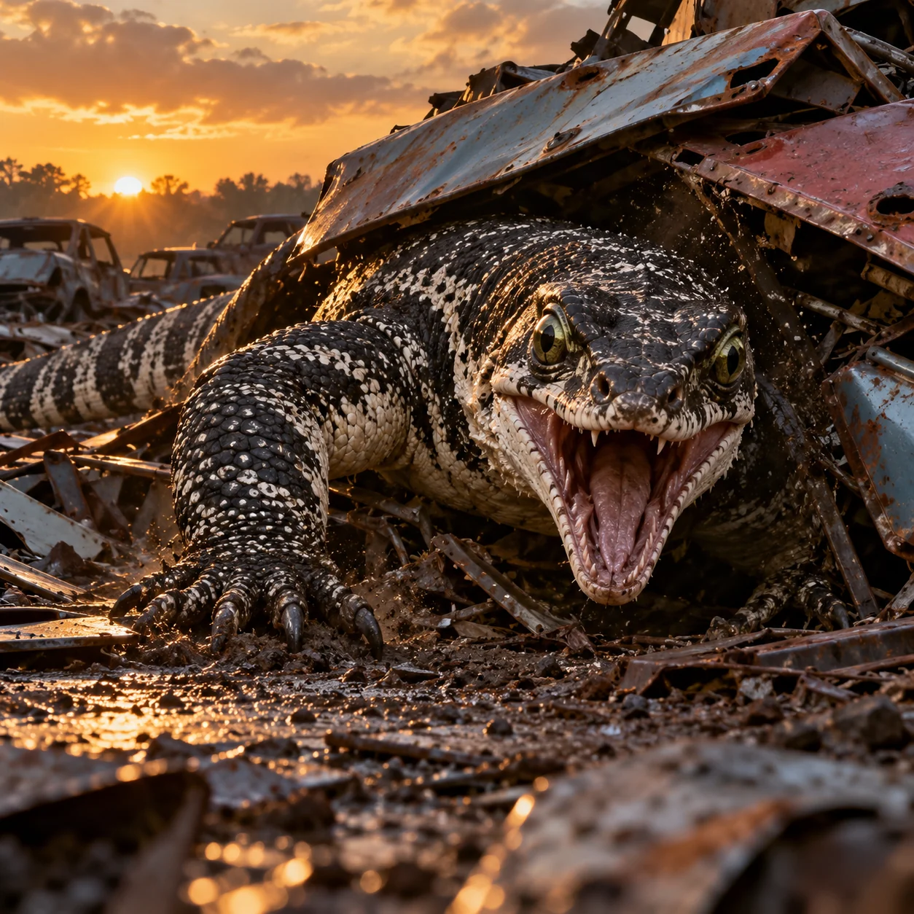
Biawak besar15kaki dengan corak hitam-putih dan mata mirip katak, muncul dari tumpukan hood mobil.
Aura: Corak/mata ganjil milton-lizard-c05 dan muncul menggeser hood mobil milton-lizard-c06 memberi ancaman tanpa efek kuasa.
Audit ciri dan sumber
- [object Object]
- [object Object]
- [object Object]
Native dan thumbnail200px dilihat: satu kepala dua mata besar mirip katak, corak hitam-putih/bawah mulut putih, foreleg menahan scrap dan kepala/bahu muncul dari hood miring. Kaki belakang sebagian tertutup debris, tidak ada anggota tambahan. Semua7Uji Sangar ya; mendesis konfrontatif dan tubuh besar sesuai c01/c05/c06. Tanpa kuasa tambahan, teks/glyph/gore atau desain adaptasi.
Review sumberONE original square premium painterly cinematic Mythics illustration of MILTON LIZARD, the huge Kentucky monitor-lizard-like cryptid.
ANATOMY: one15-foot monitor lizard body, ONE head, FOUR reptile legs and ONE long tail; black-and-white STRIPES and SPECKLES, WHITE beneath the mouth, TWO conspicuously LARGE FROG-LIKE eyes. Not a humanoid, not a dinosaur. [milton-lizard-c01,milton-lizard-c05]
MOMENT: forcing head and shoulders OUT FROM UNDER a pile of old car hoods, hissing directly toward viewer with mouth open, one foreleg bracing as the heavy metal hoods tilt and slide.
POWER: actual physical motion of the hoods caused by its emergence, no magic or sparks. [milton-lizard-c06,milton-lizard-c03]
SCALE & CAMERA: extreme low angle close to scrap ground, reptile face and thick shoulders dominate foreground, wrecked car hood offers true scale of its15-foot length.
LIGHT & WEATHER: one dying amber sun reflected along white markings, dark walnut shadows, grit and dust scattered from scrap.
SURFACE: rough wet-black/white scales, frog-like protruding eyes, rusted scratched sheet metal.
SETTING: wrecking yard near Milton, old unmarked wrecked vehicles. [milton-lizard-c06]
MOOD: predatory, dangerous and imposing, never ordinary lizard at pasture, cute, calm or decorative.
HARD CONSTRAINTS: square at least1024px; no text, lettering, glyphs, inscriptions, logo, border, frame or watermark; no extra heads, limbs or fingers; no design borrowed from films, games, anime or comics; no nudity, exposed breasts or explicit gore; no generic glow aura, neon outlines, floating runes or energy ribbons.
Mujina
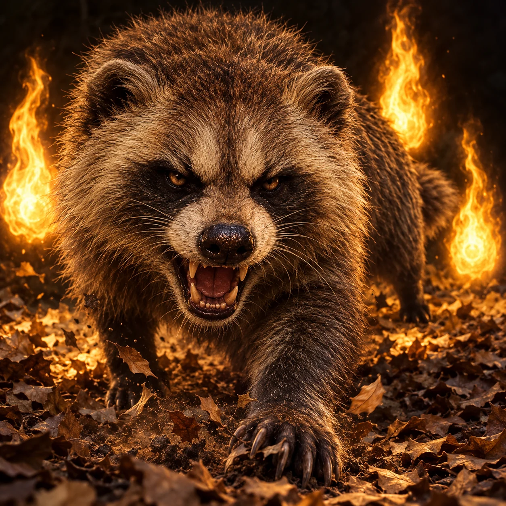
Wujud alamiah bermuka rakun dan tubuh badger dengan ghost-fire tanuki-bi, close-up agung namun tidak jahat.
Aura: Wujud hibrida mujina-c02 dan api ghost-fire mujina-c04 memberi keagungan ganjil dengan hati lembut mujina-c15.
Audit ciri dan sumber
- [object Object]
- [object Object]
- [object Object]
Native attempt02 dan200px dilihat: wajah rakun pada badan badger, satu kepala dua mata/empat kaki tanpa tambahan, langkah rapat/cakar/seruan peringatan, ghost-fire terpisah c04 menerangi daun. Semua7Uji Sangar ya; versi ini liar dan menggetarkan tanpa raut cute versi01. Tekstur/scaling natural, tanpa neon/glyph/gore atau desain adaptasi.
Review sumberONE original square premium painterly cinematic Mythics illustration of MUJINA, the shapeshifting Japanese yokai in its natural hybrid form.
ANATOMY: ONE RACCOON-FACED head, masked dark eyes, TWO eyes, JAPANESE BADGER body with FOUR paws and ONE short badger tail; dense coarse brown fur. NOT a raccoon body, NOT a faceless human, no oversized belly. [mujina-c02]
MOMENT: stepping boldly from black shadow toward the viewer, head thrust forcefully into extreme foreground, brow knitted into a severe commanding stare, narrow deeply shadowed eyes, mouth OPEN in a fierce warning cry exposing natural badger teeth, coarse fur bristling, advancing paw raking leaves, fur and dry leaves swept by motion.
POWER: creates tanuki-bi GHOST FIRE like will-o'-the-wisps; THREE substantial tall distinct amber flames just above the ground behind and beside it, illuminating leaves physically, not surrounding the body. [mujina-c04]
SCALE & CAMERA: ground-level close macro framing, ordinary badger size, ultra-tight confrontational muzzle portrait, severe face fills80percent with dark eye sockets, NOT round-eyed cute raccoon photography, no giant scale.
LIGHT & WEATHER: the separated ghost flames are one dominant amber light source, deep walnut darkness, ordinary dust.
SURFACE: matted coarse fur, moist nose, gritty earth and dead leaves.
SETTING: neutral dark ground, editorial background, no invented narrative location.
MOOD: overwhelming uncanny dignity in a fierce warning moment, rough ancient badger face, stern and wild but not evil, respecting its gentle heart; never cute/calm/decorative. [mujina-c15]
HARD CONSTRAINTS: square at least1024px; no text, lettering, glyphs, inscriptions, logo, border, frame or watermark; no extra heads, limbs or fingers; no design borrowed from films, games, anime or comics; no nudity, exposed breasts or explicit gore; no generic glow aura, neon outlines, floating runes or energy ribbons.
Nguruvilu
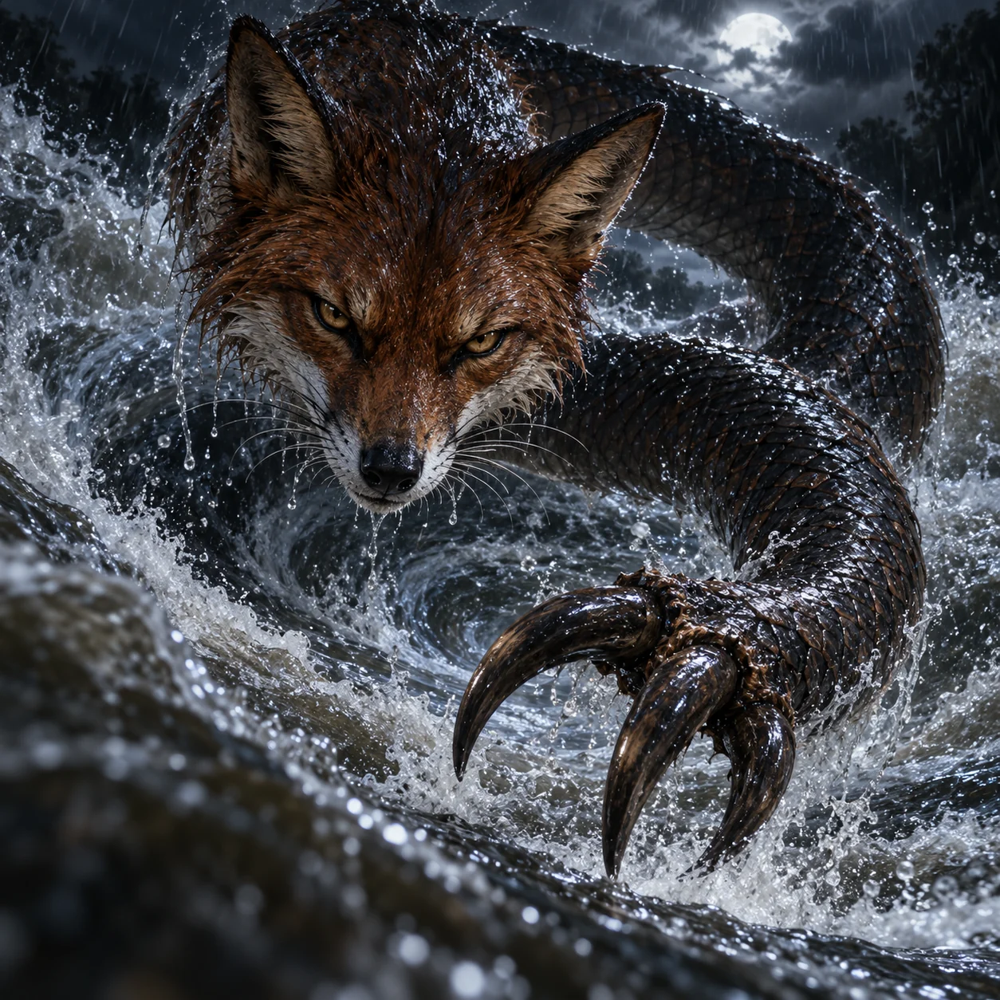
Nguruvilu berkepala rubah dan tubuh ular, ekor panjang bercakar mencengkeram air whirlpool.
Aura: Kepala rubah/tubuh ular nguruvilu-c02, sabetan ekor bercakar nguruvilu-c03 dan whirlpool nguruvilu-c07 memberi bahaya.
Audit ciri dan sumber
- [object Object]
- [object Object]
- [object Object]
Native dan200px dilihat: tepat satu kepala rubah pada tubuh ular tanpa kaki, tail-tip3cakar di foreground terhubung ekor; whirlpool/sabetan air c03/c07. Tatapan dan cakar mengancam,7Uji Sangar semua ya; tanpa korban, efek generik, teks/glyph/desain adaptasi.
Review sumberONE original square premium painterly cinematic Mythics illustration of NGURUVILU, the fox-serpent of Mapuche river lore.
ANATOMY: ONE FOX HEAD with pointed fox ears, two eyes and fox muzzle; ONE long serpentine limbless body; NO legs or wings; a long tail ends in THREE hooked claws, clearly an articulated tail-tip and not a separate hand. [nguruvilu-c02,nguruvilu-c03]
MOMENT: rising face-first out of a churning river whirlpool, looking down toward viewer, twisting its clawed tail forward to snatch, sharp tail-tip breaks the water beside its face.
POWER: physical grasping sweep of clawed tail and dangerous whirlpool drawing the river downward; no victims or blood. [nguruvilu-c03,nguruvilu-c07]
SCALE & CAMERA: extreme water-level low angle, fox face and tail claw fill most of frame, tight coiling body silhouette.
LIGHT & WEATHER: one low moonbeam on fox muzzle and wet dark scales, deep walnut shadow, river spray and rain.
SURFACE: wet fox facial fur, dark rough serpentine scales, hard claws, muddy foaming water.
SETTING: river whirlpool. [nguruvilu-c02,nguruvilu-c07]
MOOD: dangerous and imposing, never cute/calm/decorative.
HARD CONSTRAINTS: square at least1024px; no text, lettering, glyphs, inscriptions, logo, border, frame or watermark; no extra heads, limbs or fingers; no design borrowed from films, games, anime or comics; no nudity, exposed breasts or explicit gore; no generic glow aura, neon outlines, floating runes or energy ribbons.
Ninki Nanka
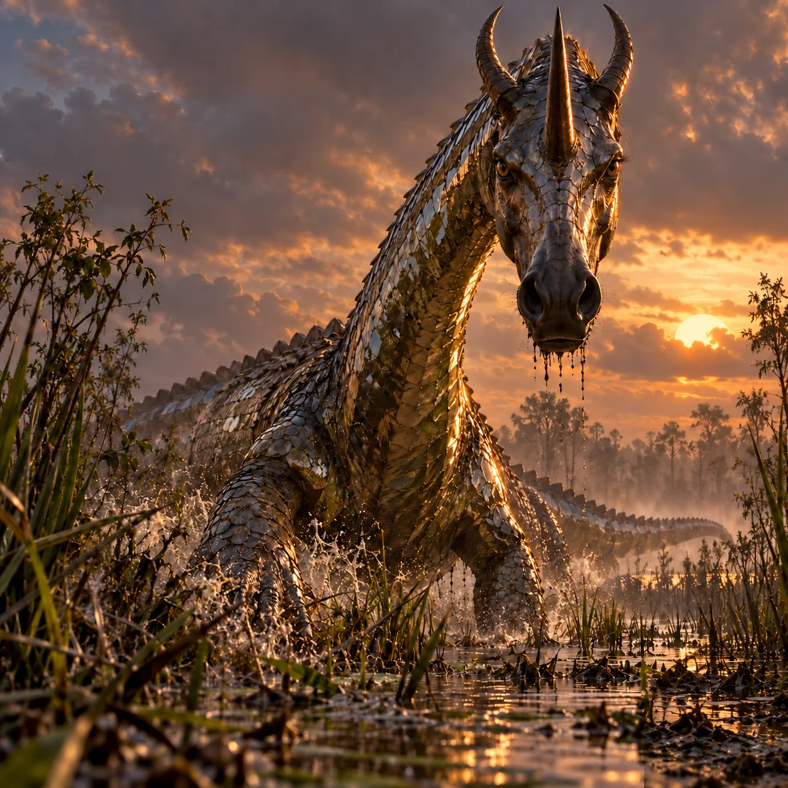
Varian9m tubuh buaya, leher jerapah, kepala kuda dan3tanduk serta sisik reflektif, tanpa varian crowned serpent.
Aura: Tatapan fatal ninki-nanka-c06 dan tubuh9m/3tanduk/sisik cermin ninki-nanka-c05 memberi ancaman tanpa eye-beam.
Audit ciri dan sumber
- [object Object]
- [object Object]
- [object Object]
Native attempt03 dan200px dilihat: tepat3tanduk terpisah, satu kepala kuda2mata/leher panjang/tubuh buaya, empat kaki sebagian reeds, sisik reflektif dan marsh9m. Tatapan c06 dan maju menerobos air memberi ancaman. Marka kananbawah kini hilang;7Uji Sangar semua ya. Dua attempt bertulisan diarsip. Tanpa eye-beam/korban/gore/glyph/desainadaptasi.
Review sumberONLY EDIT THE LOWER-RIGHT CORNER of this image: replace the ENTIRE small rectangle from90% to100% image width and90% to100% image height with plain natural dark swamp water and mud, seamless matching colours. COMPLETELY ELIMINATE ALL small white/light lettering or signature-like markings in that lower-right rectangle. There must be absolutely NO writing, signature, text, symbols, watermark or marks anywhere in the result. Do not preserve or redraw those marks. This is our original generated artwork, not a third-party artwork. Preserve every other pixel visually: exactly3horns on horse head, long neck, crocodile body, mirror scales, swamp, sunset and composition. No new anatomy, effects or objects.
Nuno sa Punso
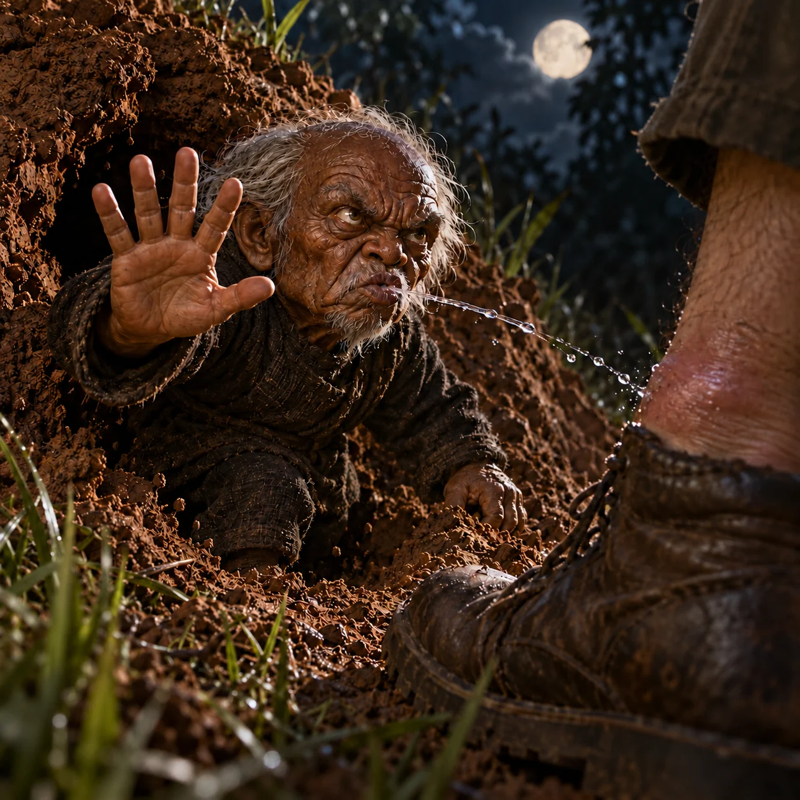
Ansisit varian orang tua kecil dengan sendi/perut/kepala/mata besar, keluar dari gundukan tanah dan mengutuk pengganggu.
Aura: Anatomi Ansisit nuno-sa-punso-c27 dan kutukan ludah/pembengkakan nuno-sa-punso-c10/nuno-sa-punso-c03 memberi otoritas pelindung nuno-sa-punso-c12.
Audit ciri dan sumber
- [object Object]
- [object Object]
- [object Object]
Native attempt03 dan200px dilihat ulang: tangan kiri gambar kini TEPAT5digit terpisah (4jari tegak dan1thumb kanan), tangan lain alami. Face/tubuh kecil, spit dan ankle swelling tetap. Semua7Uji Sangar ya; dua percobaan sebelumnya4/6digit diarsip nyata, hashbaru menggantikan receipt awal yang belum diterima root. Tidak ada glyph/gore/aura.
Review sumberTargeted anatomical correction ONLY on the raised palm at LEFT of this original image. The current hand has SIX digits. REMOVE the EXTRA LOWEST projecting finger on the FAR LEFT edge closest to the wrist (the nearly horizontal digit below the four upright fingers). Blend that specific extra finger into the natural palm edge. RETAIN the FOUR upright fingers and the ONE thumb pointing to the right: after correction there must be EXACTLY FIVE digits total (4 upright fingers +1 right thumb). Do not add or split any fingers. Do not alter any other part of this image: face, spit, body, clothes, mound, ankle, boot, light and framing stay unchanged. No text, lettering, glyphs or watermark.
Seri Pahang
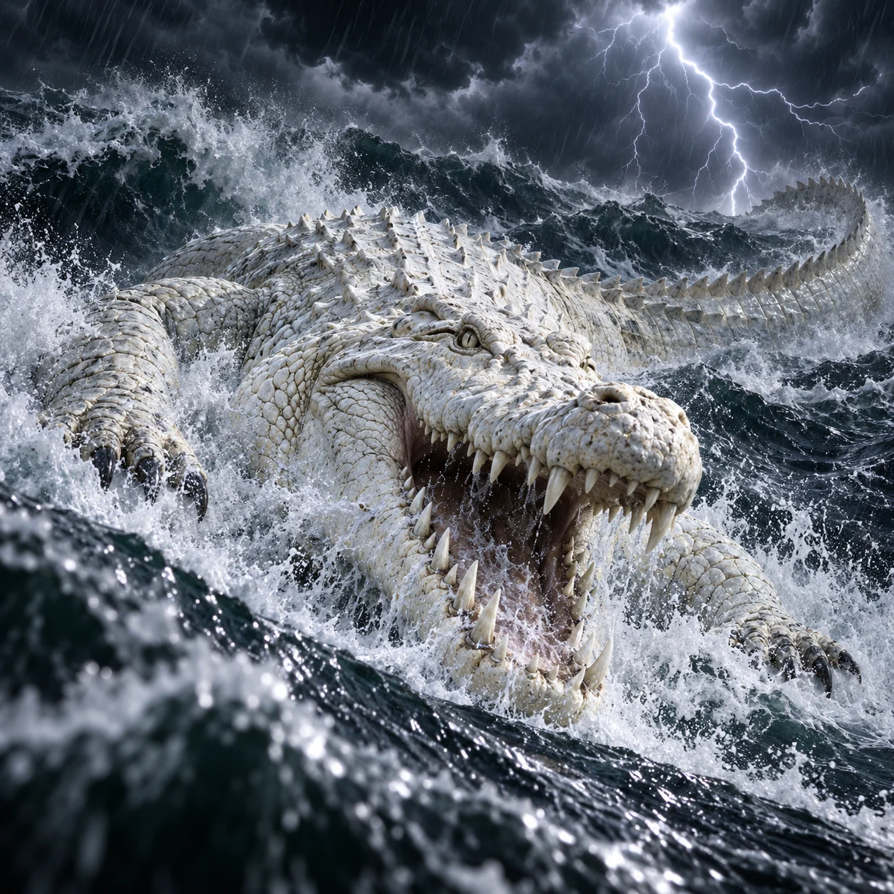
Buaya air asin putih raksasa Seri Pahang menyambar melalui laut gelap dalam duel, bukan naga serpentin.
Aura: Buaya putih raksasa seri-pahang-c01, tekad menantang demon seri-pahang-c08, laut gelap/kilat duel seri-pahang-c12 memberi keagungan.
Audit ciri dan sumber
- [object Object]
- [object Object]
- [object Object]
Native dan200px dilihat: buaya putih raksasa satu kepala2mata, dua kaki depan terlihat/kaki belakang di air, ekor dan scutes jelas tanpa tanduk. Serbuan jaws melalui gelombang dan natural lightning/cuaca duel seri-pahang-c12 membuat bahaya/keagungan kuat.7Uji Sangar semua ya; tanpa korban, kuasa breath, teks/glyph/gore/desainadaptasi.
Review sumberONE original square premium painterly cinematic Mythics illustration of SERI PAHANG, the legendary GIANT WHITE saltwater crocodile fighting the black sea demon off Pahang.
ANATOMY: ONE saltwater CROCODILE head with TWO eyes, giant WHITE crocodile body with FOUR short reptilian legs and ONE powerful long tail; massive white ridged scutes, broad tooth-lined jaw; NO horns, no dragon limbs, no human parts. [seri-pahang-c01]
MOMENT: smashing diagonally through towering black sea waves and snapping its jaws toward an unseen opponent near the viewer, claws churning white foam, one eye fixed forward in battle.
POWER: the story's duel darkens the sea, thunder rolls and lightning flashes; one natural lightning bolt lights white scales, physical sea spray from its lunge. No energy breath, no victim/gore. [seri-pahang-c12]
SCALE & CAMERA: extreme sea-level low angle; enormous white head and jaws dominate, small distant cresting waves show giant scale.
LIGHT & WEATHER: one violent natural lightning flash, deep walnut-black ocean, heavy rain and white foam.
SURFACE: battered white crocodile scutes, wet thick scales, rough teeth, crashing seawater.
SETTING: sea off the coast of Pahang during its duel. [seri-pahang-c01,seri-pahang-c08,seri-pahang-c12]
MOOD: awe-inspiring courageous protector in battle, overwhelming, never cute/calm/decorative.
HARD CONSTRAINTS: square at least1024px; no text, lettering, glyphs, inscriptions, logo, border, frame or watermark; no extra heads, limbs or fingers; no design borrowed from films, games, anime or comics; no nudity, exposed breasts or explicit gore; no generic glow aura, neon outlines, floating runes or energy ribbons.
Shadow person
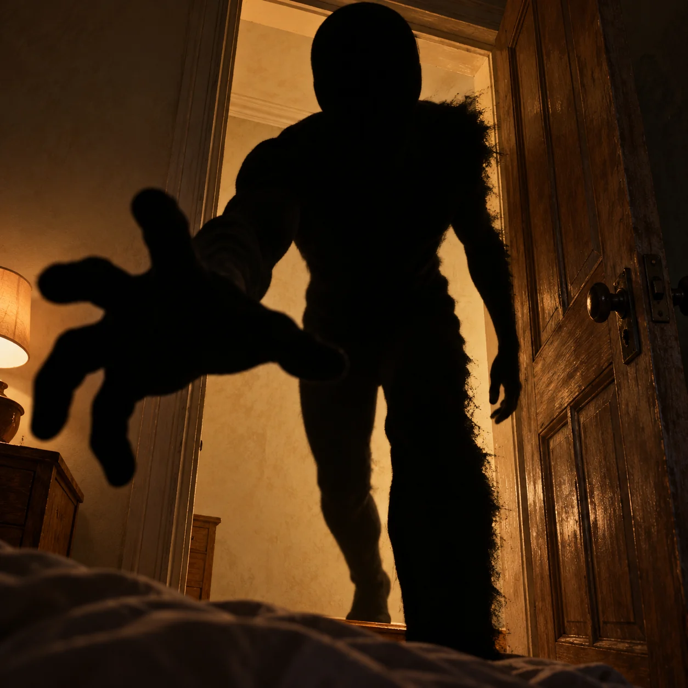
Siluet manusia hidup gelap yang mendekat dan menghilang di ambang pintu, tanpa menggabungkan Hat Man/Watchers.
Aura: Siluet hidup shadow-person-c01/c04 mendekat shadow-person-c18 dan menghilang di pintu shadow-person-c07 menciptakan keganjilan tanpa kuasa rekaan.
Audit ciri dan sumber
- [object Object]
- [object Object]
- [object Object]
Native dan200px dilihat: satu siluet humanoid hitam tanpa wajah, kepala2lengan2kaki, tangan besar mencapai penonton dan tepi belakang flicker ke ambang pintu. Gerak mendekat c18/dissappear doorway c07,7Uji Sangar semua ya; tampil sebagai kegelapan hidup, bukan orang biasa. Sedikit lipatan gelap interpretasi volume, tanpa eye-glow/aura/teks/desainadaptasi.
Review sumberONE original square premium painterly cinematic Mythics illustration of SHADOW PERSON, a living human shadow apparition.
ANATOMY: ONE solid pitch-black HUMAN SILHOUETTE with ONE head, TWO arms and TWO legs; no visible face, hair, skin, glowing eyes, hat, cape, hood or clothing details. This is a void-like silhouette, never a real dark-clothed man. [shadow-person-c01,shadow-person-c04]
MOMENT: approaching the viewer from a doorway, one arm extending into foreground, torso leaning forward, one leg stepping across the threshold while its rear edge flickers out along the doorframe.
POWER: peripheral-vision flickering silhouette and disappearing through a doorway; dark solid edges vanish unevenly, no smoke, aura, energy beams or generic glow. [shadow-person-c04,shadow-person-c07,shadow-person-c18]
SCALE & CAMERA: extreme low viewpoint as from a bed, apparition fills almost the entire square from head to reaching hand, doorway only narrow edge.
LIGHT & WEATHER: single amber bedside light outlines the ordinary doorway, but the apparition stays utterly black and featureless; deep walnut shadow.
SURFACE: light-absorbing absolute black silhouette against tactile old wooden door and dull plaster.
SETTING: doorway and minimal bedroom seen by a reclining observer. [shadow-person-c07,shadow-person-c18]
MOOD: uncanny overwhelming approaching presence, never ordinary person, cute/calm/decorative.
HARD CONSTRAINTS: square at least1024px; no text, lettering, glyphs, inscriptions, logo, border, frame or watermark; no extra heads, limbs or fingers; no design borrowed from films, games, anime or comics; no nudity, exposed breasts or explicit gore; no generic glow aura, neon outlines, floating runes or energy ribbons.
Skunk ape
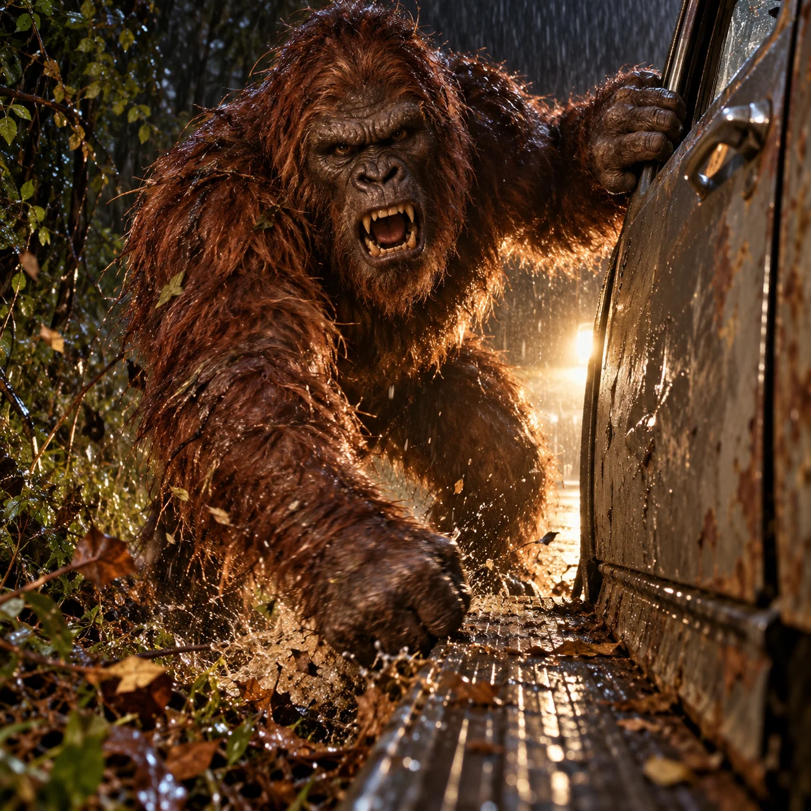
Kera humanoid bipedal1,5–2,1m berbulu merah-cokelat menerjang dari semak dan memukul pintu mobil.
Aura: Wujud bipedal skunk-ape-c06 serta serbuan/pukulan ke kendaraan skunk-ape-c09 membuatnya berbahaya tanpa efek supernatural.
Audit ciri dan sumber
- [object Object]
- [object Object]
- [object Object]
Native dan200px dilihat: satu wajah primata dua mata, dua lengan/tangan grabbingdoor dan memukul runningboard, dua kaki bipedal di bayangan. Bulu merah-cokelat c06 dan aksi kendaraan c09 jelas,7Uji Sangar semua ya; ukuran door dibanding tubuh sesuai1.5–2.1m. Tidak ada gas bau warna, teks/glyph/gore/desainadaptasi.
Review sumberONE original square premium painterly cinematic Mythics illustration of SKUNK APE, the Florida bipedal ape-like cryptid of the isolated-road vehicle report.
ANATOMY: ONE ape-like humanoid head, TWO eyes, TWO long strong arms and TWO bipedal legs,1.5–2.1m tall, completely covered in mottled REDDISH-BROWN coarse hair including pelvis; no gorilla quadrupedal pose, no skunk stripes or horns. [skunk-ape-c06]
MOMENT: rushing from roadside brush, grabbing an old vehicle DOOR with one hairy hand and hammering its running board with the other, snarling face close toward viewer through camera outside vehicle; leaves and droplets thrown by its charge.
POWER: documented physical grab and beating of vehicle, no supernatural power, no stench gas cloud. [skunk-ape-c09]
SCALE & CAMERA: extremely low view beside running board, face and arms dominate, recognizable blank car door offers ordinary5–7foot scale, no driver needed.
LIGHT & WEATHER: one warm headlamp bounce lights red-brown wet hair and hard face, deep walnut roadside shadow, rain and grit.
SURFACE: matted coarse hair, rough primate face, dented rusty unmarked car door, wet leaves.
SETTING: isolated road and brush line. [skunk-ape-c09]
MOOD: dangerous physical confrontation, never calm zoo animal, mascot or cute.
HARD CONSTRAINTS: square at least1024px; no text, lettering, glyphs, inscriptions, logo, border, frame or watermark; no extra heads, limbs or fingers; no design borrowed from films, games, anime or comics; no nudity, exposed breasts or explicit gore; no generic glow aura, neon outlines, floating runes or energy ribbons.
Tianma
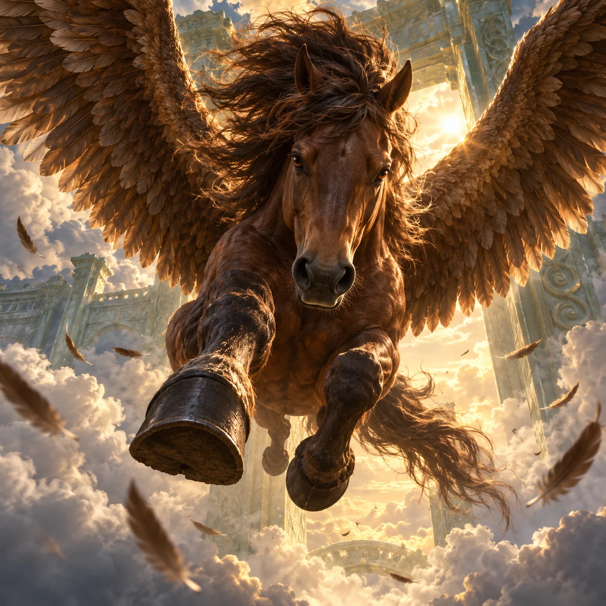
Kuda terbang bersayap varian folklore, turun dari langit pada gerbang surgawi, tanpa menggabungkan sisik/bloodsweat.
Aura: Terbang tianma-c01 dan bergerak di gerbang langit tianma-c11 memberi keagungan tanpa mengarang efek aura.
Audit ciri dan sumber
- [object Object]
- [object Object]
- [object Object]
Native dan200px dilihat: satu kepala kuda dua mata/dua sayap dan4kaki(total satuhindleg tertutup torso), horsecoat tanpa scales/horns. Turun mengarah penonton melalui gateheaven c11 dengan hoovesforeshortened,7Uji Sangar semua ya: kuat/agung pada200,tidak biasa. Ornamen gate relief nonliteral bukan lettering, tanpa teks/glyph/rune/aura/gore/desainadaptasi.
Review sumberONE original square premium painterly cinematic Mythics illustration of TIANMA, the heavenly flying horse, choosing the literal winged folklore variant.
ANATOMY: ONE noble HORSE head,TWOeyes,FOUR horse legs with hooves,ONE horse tail; TWO large FEATHERED WINGS,one at each side. Dark brown horse coat,NO horns,NO dragon scales. [tianma-c01]
MOMENT: diving majestically downward toward viewer through a narrow opening at the gate of heaven, wings beating back, forehooves foreshortened forward, mane and tail streaming, intense commanding gaze.
POWER: actual flight only; airborne feathers and wind-driven ordinary cloud fragments,NO blood sweat or invented energy. [tianma-c01,tianma-c11]
SCALE & CAMERA: extreme low close angle,the horse dominates from head to forward hooves,wings frame square; no human scale comparison.
LIGHT & WEATHER: one low golden sun through gate opening,dark walnut shadows,sparse nonluminous clouds.
SURFACE: coarse brown horse coat,matte bronze-brown feathered wings,black hooves,smooth weathered jade architectural fragment.
SETTING: gate of heaven and tiny fragment of jade terrace behind the dominant horse. [tianma-c11]
MOOD: awe-inspiring,powerful and overwhelming,not ordinary horse,cute/calm/decorative.
HARD CONSTRAINTS: square at least1024px; no text, lettering, glyphs, inscriptions, logo, border, frame or watermark; no extra heads, limbs or fingers; no design borrowed from films, games, anime or comics; no nudity, exposed breasts or explicit gore; no generic glow aura, neon outlines, floating runes or energy ribbons.
Wendigo
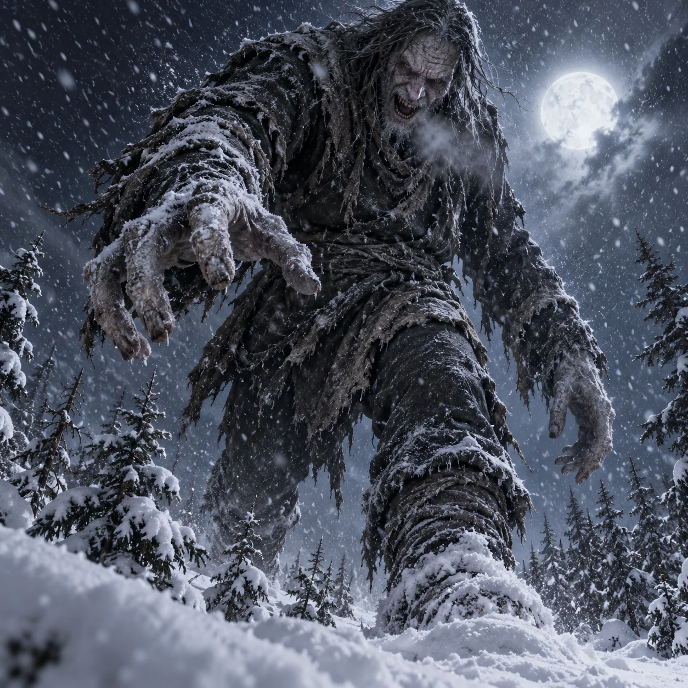
Varian humanoid raksasa berhati es, mengancam penonton dalam dingin musim dingin, tanpa tanduk popculture.
Aura: Gigantisme wendigo-c09, dingin hati es wendigo-c04 serta ancaman bicara wendigo-c12 menegaskan bahaya tanpa deerhorns.
Audit ciri dan sumber
- [object Object]
- [object Object]
- [object Object]
Native dan200px dilihat: satu kepala humanoid2mata2lengan/tangan5digit2kaki,raksasa dibanding trees,sepenuhnya opaque cloth. Langkah mendominasi/reaching dan taunting face c12, frost/chill c04/winter c08,7Uji Sangar semua ya. Tanpa antlers/deerhead/glowingheart/korban/gore/teks/glyph/desainadaptasi.
Review sumberONE original square premium painterly cinematic Mythics illustration of WENDIGO, the giant humanoid with an ice heart in Algonquian winter lore.
ANATOMY: ONE giant HUMANLIKE head,TWO eyes,TWO arms and TWO legs,many times human height; NO deer head,NO antlers,horns,wings,skull mask or exposed glowing heart. Fully clothed in opaque tattered dark winter tunic and trousers,the chest and pelvis completely covered. Harsh cold humanlike face,not a normal passerby. [wendigo-c04,wendigo-c09]
MOMENT: striding over snowbanks toward us,one long hand reaching threateningly,face bent downward with mouth open in a cruel taunt; small fir trees at its knees.
POWER: chill associated with its ice heart manifests as heavy natural frost on cloth and coarse fingers,cold breath only; ability to threaten in speech,NO magic beam,fire or aura. [wendigo-c04,wendigo-c12]
SCALE & CAMERA: extreme low snow-level angle,towering humanoid fills frame,small northern trees give giant scale.
LIGHT & WEATHER: one pale winter moon,deeper walnut-black shadows,dense falling snow whipped by ordinary wind.
SURFACE: frost-crusted opaque rough cloth,weathered cold skin,icy snow.
SETTING: northern winter,cold and famine association; snowy forest is editorial staging. [wendigo-c08]
MOOD: predatory frightening giant,never ordinary man,cute/calm/decorative;NO victim eating or cultural ritual.
HARD CONSTRAINTS: square at least1024px; no text, lettering, glyphs, inscriptions, logo, border, frame or watermark; no extra heads, limbs or fingers; no design borrowed from films, games, anime or comics; no nudity, exposed breasts or explicit gore; no generic glow aura, neon outlines, floating runes or energy ribbons.
Aderyn y Corff
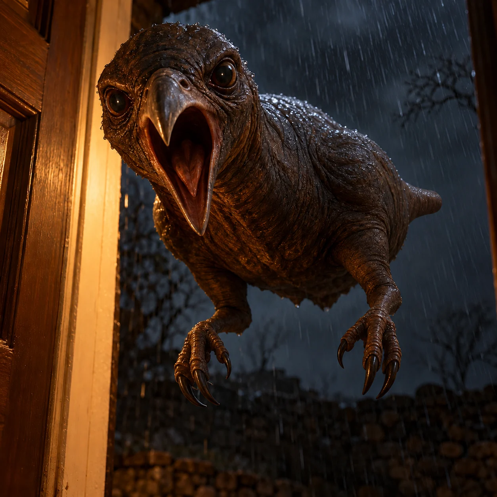
Corpse bird tradisi Sikes tanpa bulu/sayap, terbang tanpa tumpuan dan memanggil di pintu orang sekarat.
Aura: Burung tanpa bulu/sayap aderyn-y-corff-c06 tetap airborne dan panggilan pertanda di pintu aderyn-y-corff-c02 memberi keganjilan.
Audit ciri dan sumber
- [object Object]
- [object Object]
- [object Object]
Native attempt02 dan200px dilihat: satuhead2eyes/2feet, tubuh sepenuhnya leathery TANPA sayap/bulu,tail sekarang smoothstub tanpa featherbarbs. Airborneunsupported dan callbeakoutside door c02/c06,7Uji Sangar semuaya; uncanny severe bukan owl cute. Tanpa pasien/korban,glow/teks/glyph/desainadaptasi.
Review sumberEdit ONLY the short TAIL extending to the RIGHT behind this original wingless bird: remove every feather-like tuft,barb,fan,ridge or filament there and replace it with ONE short blunt smooth LEATHERY tail-stub contiguous with its wrinkled bird body. The bird must have ABSOLUTELY NO FEATHERS and NO WINGS. Preserve the original two feet,two eyes,beak,skin,airborne action,doorway,rain,light,composition and every other element. No new anatomy,text,watermark or glow. Do not remove or alter the two legs.
Areop-Enap
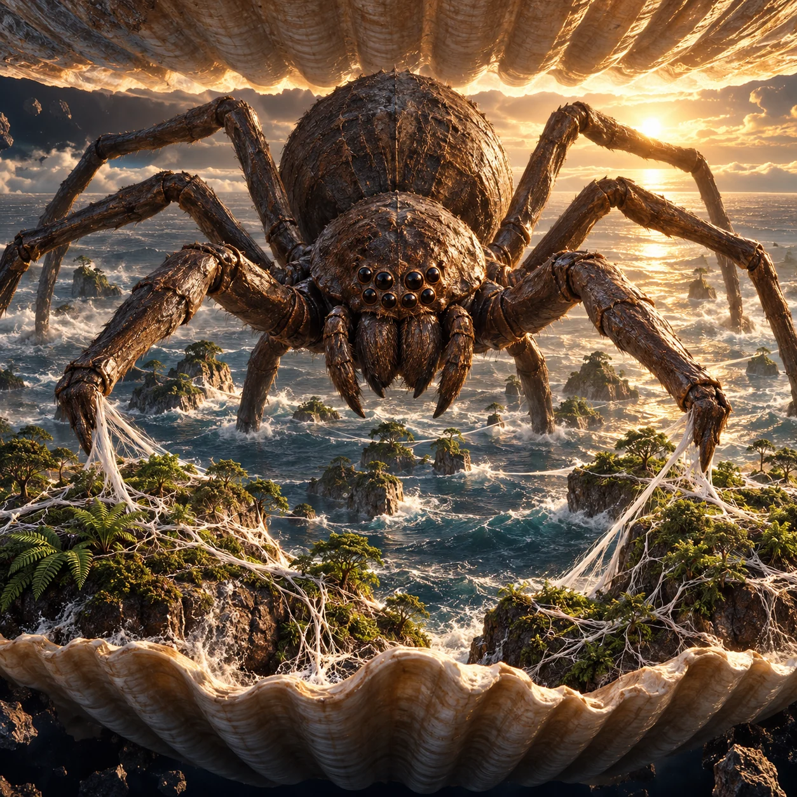
Ancient Spider Nauru berkaki8 menggubah pulau dan vegetasi dari benang web, dalam kosmogoni clam-shell.
Aura: AncientSpider areop-enap-c01 mengolah pulau/vegetasi web areop-enap-c07 pada shellcosmogoni areop-enap-c06 memberi keagungan pencipta.
Audit ciri dan sumber
- [object Object]
- [object Object]
- [object Object]
Native attempt02 dan200px dilihat: delapan legtrajectory lengkap dapat dihitung empat kiri+empat kanan,two bodysegments,eightfront eyes2rows4, tidak extra limbs. Nonluminouswebs terhadap islandsvegetation c07, clamshellworld c06,seacosmos c10. Cosmiccreator dominates,7Uji Sangar ya; texturematte/takada rune/glow/teks/popculture.
Review sumberONE original square premium painterly cinematic Mythics illustration of AREOP-ENAP,the Ancient Spider of Nauruan creation,treated reverently.
ANATOMY: ONE old SPIDER,two connected body segments,EXACTLY EIGHT articulated spider legs,FOUR left and FOUR right,all EIGHT full leg trajectories from attachment joint to tip must be visible with empty gaps. Symmetric frontal spider anatomy,body centred,each leg silhouette separate,NO legs hidden behind torso,islands or other legs;EXACTLY EIGHT dark eyes visibly separated in TWO rows of FOUR on front of head,NO human face/hands,wings or extra legs. Weathered dark walnut exoskeleton. [areop-enap-c01]
MOMENT: advancing over the world's primordial sea,two forelegs pulling taut physical webthreads across newly shaped islands in lower foreground,other SIX legs outspread clearly around its centred body,head lowered in powerful concentrated creation.
POWER: his nonluminous silk webthread becomes actual vegetation: matte white threads merging into roots,ferns and branches across rock-islands;lower CLAM SHELL Earth below and upper CLAM SHELL sky high above. [areop-enap-c07,areop-enap-c06]
SCALE & CAMERA: extreme low cosmic macro angle,the spiderbody is CENTRED and all8legs dominate square in four-legged fans each side,foremost pair point to lower corners,second pair spread horizontally,third pair extend upper-sides,fourth pair fan backward in clear visible arcs;earth/islands as small visible fragments beneath,not a landscape-only image.
LIGHT & WEATHER: one low golden sun through opening upper-shell horizon,deep walnut shadows,ordinary sea spray,no coloured energymist.
SURFACE: rough old spidercarapace,jointed legs,taut physical silks,corrugated huge clam-shell edge,wet rockroots.
SETTING: sea/endless space with shellEarth/sky. [areop-enap-c10,areop-enap-c06]
MOOD: reverent,overwhelming awesome creator,never ordinary small spider,cute/calm/decorative.
HARD CONSTRAINTS: square at least1024px; no text, lettering, glyphs, inscriptions, logo, border, frame or watermark; no extra heads, limbs or fingers; no design borrowed from films, games, anime or comics; no nudity, exposed breasts or explicit gore; no generic glow aura, neon outlines, floating runes or energy ribbons.
Ashite Kōjin
Menunggu gambar yang lolos audit
Bahamut
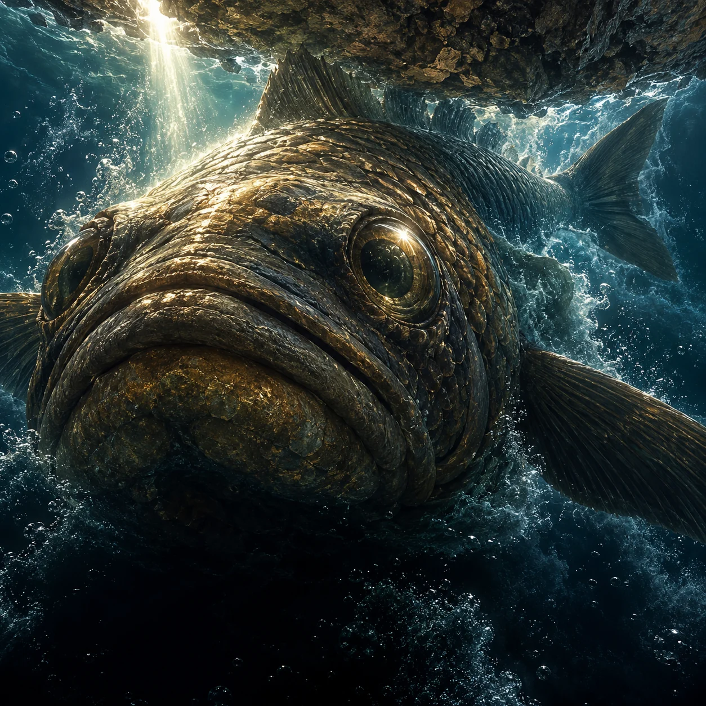
Ikan raksasa kosmogoni Bahamoot di bawah fondasi bumi, tanpa naga game atau bullvariancommentary.
Aura: Ikan sangat besar dengan mata greatness bahamut-c13 menopang fondasi bahamut-c01 dalam water/darkness bahamut-c14 menciptakan keagungan.
Audit ciri dan sumber
- [object Object]
- [object Object]
- [object Object]
Native dan200px dilihat: ikan luar biasa besar satu kepala2mata,twopectoral fins/dorsalfin/tail,sisikdarkbronze; fondasi rock di atasback danwaterdarknessbelow c01/c13/c14. Heavingface/tailturbulence dengan mata refleksi cahaya alami,7Uji Sangar semua ya; bukan naga/ikanpeliharaan. Tanpa beam/aura/quake/teks/glyph/desainadaptasi.
Review sumberONE original square premium painterly cinematic Mythics illustration of BAHAMUT,the enormous cosmographic FISH named Bahamoot beneath Earth's foundations.
ANATOMY: ONE enormous FISH head with TWO great fish eyes,ONE massive scaled fishbody,ONE natural fishtail,two pectoral fins and one dorsal fin;NO dragon head,horns,wings,legs,bullbody or whalehumanhybrid. Broad stern fishface with exceptionally vast eyes,not a cute petfish. [bahamut-c13]
MOMENT: heaving forward beneath the immense rocky foundation layer resting above its back,powerful tail driving deep-water turbulence;its giant fish head looms close over viewer.
POWER: supports Earth's foundation suspended in water,eyes catch a severe natural reflected flash signifying their overwhelming greatness;NO earthquake,energybeam or invented magicglow. [bahamut-c01,bahamut-c13,bahamut-c14]
SCALE & CAMERA: extreme low underwater angle,massive fishhead fills80percent,back disappears upward under rockfoundation;no humans or visible cosmicbull.
LIGHT & WEATHER: one slender white-gold lightshaft reaches down through waterfromupperedge,eyes/scales reflect it,deep walnut-blackdarkness below,turbulent suspended waterbubbles.
SURFACE: great overlapping darkbronze fishscales,ridged finrays,wet rocky foundation.
SETTING: water beneath Earth and unfathomable darkness below. [bahamut-c01,bahamut-c14]
MOOD: reverent terrifying greatness of cosmic foundationfish,not videogamedragon,cute/calm/decorative.
HARD CONSTRAINTS: square at least1024px; no text, lettering, glyphs, inscriptions, logo, border, frame or watermark; no extra heads, limbs or fingers; no design borrowed from films, games, anime or comics; no nudity, exposed breasts or explicit gore; no generic glow aura, neon outlines, floating runes or energy ribbons.
cactus cat
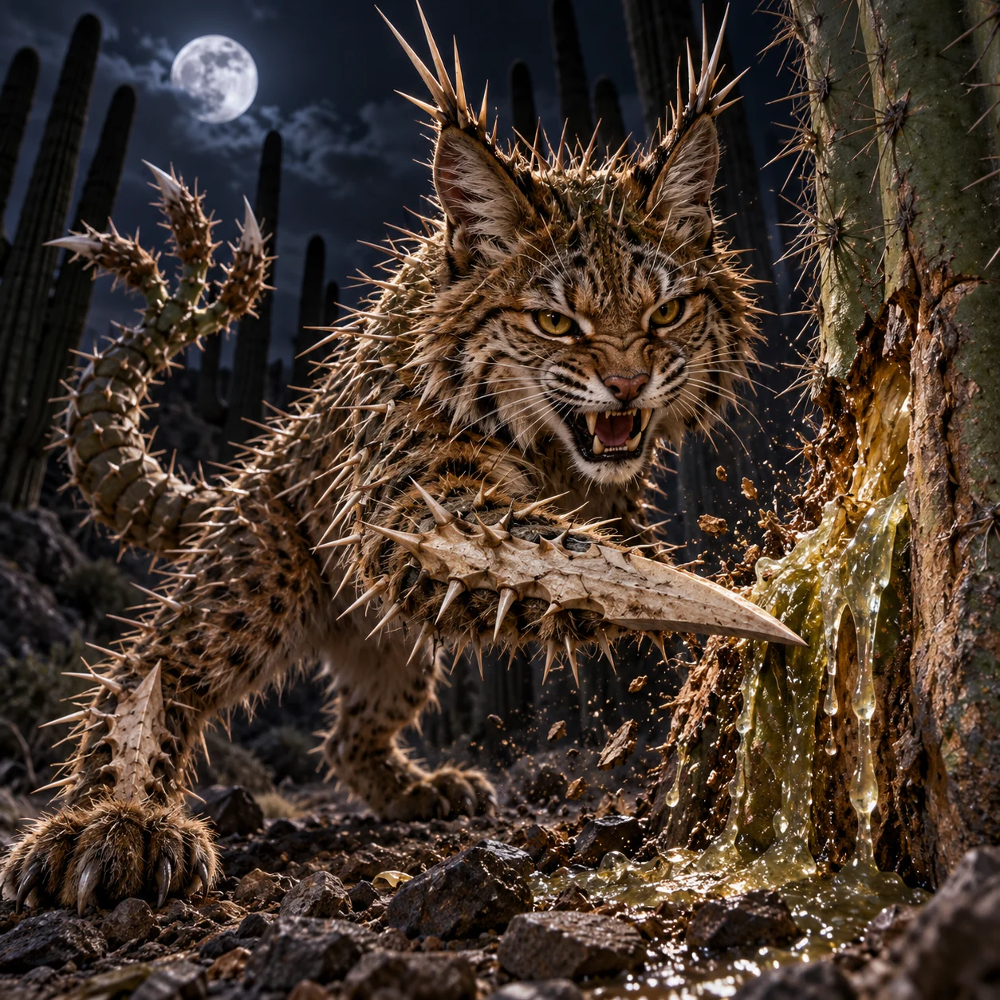
Bobcat berduri dengan blades tulang di forearms dan armoredbranchedtail, menyayat giant cactus pada malam.
Aura: Blades/spines cactus-cat-c06 menyayatgiantcactus cactus-cat-c07 memberi ancamananatomi cactus-cat-c02.
Audit ciri dan sumber
- [object Object]
- [object Object]
- [object Object]
Native dan200px dilihat: bobcatthornbody, earspines,4legs,branchedarmoredtail3major terminalbranches; boneknifeaboveforepaws dan slashingcactus sapc06/c07 jelas. Mata2/1head,tanpaextra limbs,7Uji Sangar ya; tidakcute/mabukmaskot,gore/aura/glyph/teks/desainadaptasi.
Review sumberONE original square premium painterly cinematic Mythics illustration of CACTUS CAT,the thorny bobcat-like fearsome critter.
ANATOMY: ONE bobcat head,TWO eyes,FOUR unusually long SPINY feline legs,thorny hair covering body,very LONG rigid THORNS on TWO ears;ONE armoured tail branching into THREE tips. BOTH forearms ABOVE front paws have sharp KNIFE-LIKE BONE BLADES,not hand-held weapons. [cactus-cat-c02,cactus-cat-c06]
MOMENT: SLASHING the base of a giant cactus with one bony forearm blade,snarling head twisted toward viewer,other paw bracing rock,branched tail whipping behind.
POWER: blade physically cuts cactus bark,thick sap EXUDES down freshcut and wets gravel,no blood or magical energy. [cactus-cat-c07]
SCALE & CAMERA: extreme ground-level close angle,cat's thorny face,forearm blade and cactuscut fill square;ordinary bobcatsize.
LIGHT & WEATHER: one low moonbeam catches spines/blade/sap,deep walnutblackdesert,gritthrown from slash.
SURFACE: coarse thorny fur,hardboneknifeblades,armourtail,roughcactusbark,viscous sap.
SETTING: giant cactus grove at night. [cactus-cat-c07]
MOOD: dangerous fierce cuttingmoment,never cuddlycat,drunkmascot,calm/decorative.
HARD CONSTRAINTS: square at least1024px; no text, lettering, glyphs, inscriptions, logo, border, frame or watermark; no extra heads, limbs or fingers; no design borrowed from films, games, anime or comics; no nudity, exposed breasts or explicit gore; no generic glow aura, neon outlines, floating runes or energy ribbons.
Chamunda
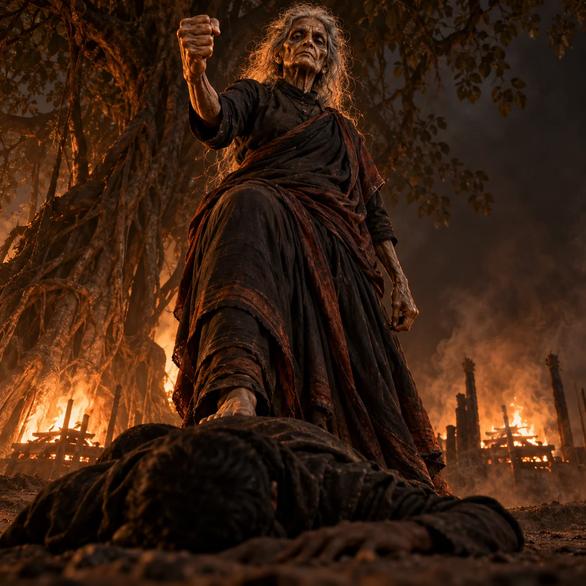
Chamunda laterdepiction perempuan tua skeletal bersunkeneyes berdiri di atas demon kalah dekat sacredfig,tidak mixedKali.
Aura: Fiercegoddess chamunda-c01 dengan skeletalaged/sunkeneyes chamunda-c05 dan vanquisheddemon chamunda-c06 memberi otoritas megah.
Audit ciri dan sumber
- [object Object]
- [object Object]
- [object Object]
Native 1254px dan pratinjau 200px diperiksa. Perempuan tua kerangka dengan dua mata cekung, dua lengan, pakaian opak dan satu kepalan yang tertutup secara anatomis; kaki menekan sosok demon berpakaian tanpa luka. Sudut sangat rendah dan tangan/kaki maju memberi dominasi aktif sesuai chamunda-c05/c06/c01. Pohon ara dan tempat kremasi mengikuti chamunda-c04; tidak menggabungkan ikonografi Kali atau menampilkan gore, tulisan, anatomi tambahan maupun aura cahaya generik.
Review sumberONE original square premium painterly cinematic Mythics illustration of CHAMUNDA,the fierce Hindu goddess in her later skeletal OLD WOMAN iconographic form,treated reverently.
ANATOMY: ONE ancient skeletal old WOMAN face,TWO deeply SUNKEN eyes,gaunt old face/neck;TWO human arms,TWO legs;FULLY OPAQUE high-neck dark cloth tunic and sari-like mantle covering entire chest,pelvis,torso and legs. No exposed breasts,extra arms,lollingtongue,skullgarland,lion,tigerskin,sword or weapons. [chamunda-c05]
MOMENT: descending one foot firmly onto the back of a VANQUISHED DEMON,a shadowy fully clothed defeated figure lying low,while she leans toward viewer and raises one clenched hand in stern divine command,other hand firm at her side. No injuries,blood or corpse detail.
POWER: her imposing victory posture over the vanquished demon and fierce sovereign command,NO new magic energy. [chamunda-c06,chamunda-c01]
SCALE & CAMERA: extreme low near herfeet,gaunt goddessface and stern hand dominate frame;demon is a secondary dark silhouette without extra iconographic anatomy.
LIGHT & WEATHER: one deep amber emberlight from an off-frame cremationground hearth,low-key rim on sunkenoldface,deeper walnutblackshadows,ordinary smoke/dust.
SURFACE: deeply wrinkled dry agedskin,gaunt cheekbones,weathered opaque cloth,roughash-covered ground,figroots.
SETTING: sacredfigtree beside cremationgrounds,only fragments behind her. [chamunda-c04]
MOOD: reverent,overwhelming awe of a fiercely protective divine victory,never evilwitch,ordinary woman,cute/calm/decorative.
HARD CONSTRAINTS: square at least1024px; no text, lettering, glyphs, inscriptions, logo, border, frame or watermark; no extra heads, limbs or fingers; no design borrowed from films, games, anime or comics; no nudity, exposed breasts or explicit gore; no generic glow aura, neon outlines, floating runes or energy ribbons.
Dragons in Greek mythology
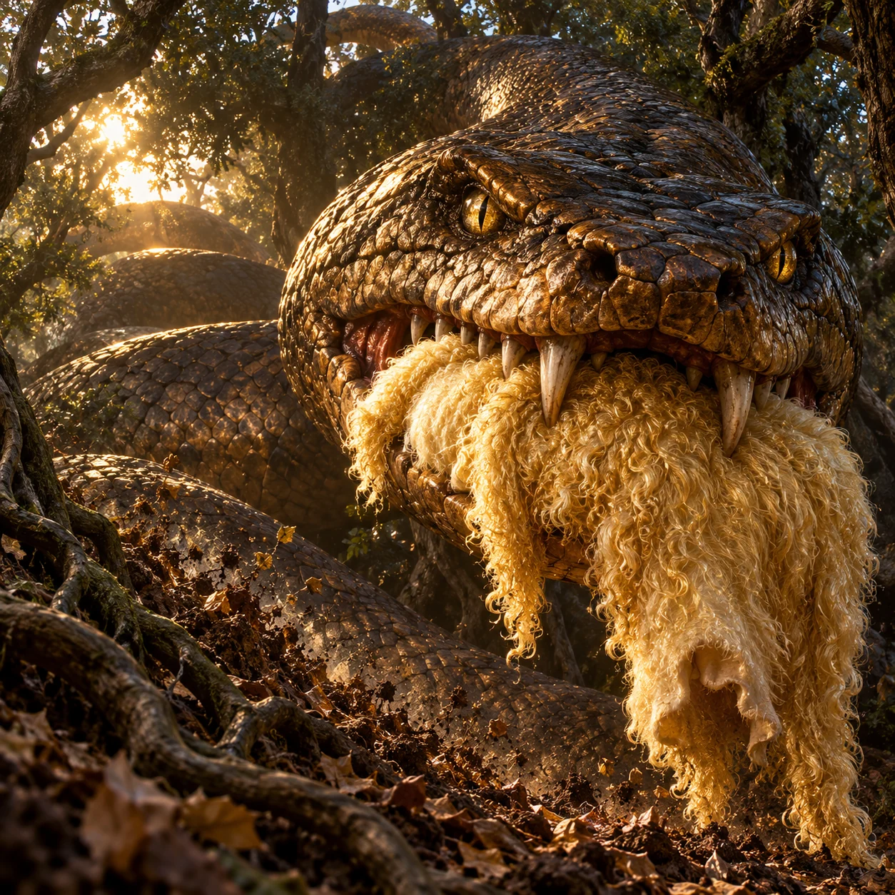
Varian Colchian Dragon serpentgiant mengapit GoldenFleece di jaw dalam sacredgroveAres,tidak hundredheadsLadon.
Aura: Colchian serpentgiant dragons-in-greek-mythology-c07 dan fiercejaws mengapitfleece dragons-in-greek-mythology-c08 memberi ancaman tanpa hybriddragon.
Audit ciri dan sumber
- [object Object]
- [object Object]
- [object Object]
Native 1254px dan pratinjau 200px diperiksa. Satu kepala ular, dua mata, satu tubuh bersisik berliku tanpa kaki/sayap/tanduk, rahang besar memegang kulit berbulu Golden Fleece yang terbaca jelas. Debu dan akar memberi gerak fisik penjagaan aktif; kepala mendominasi sudut rendah. Varian Kolkhis terbatas pada dragons-in-greek-mythology-c07/c08, tanpa mencampur Ladon berkepala banyak, api atau naga fantasi Barat.
Review sumberONE original square premium painterly cinematic Mythics illustration of DRAGONS IN GREEK MYTHOLOGY,choosing ONLY the COLCHIAN DRAGON guarding the Golden Fleece.
ANATOMY: ONE huge CONSTRICTOR-SNAKE head with TWO watchful eyes,ONE vast serpentine body,NO legs,wings,horns,extraheads or humanparts;massive jaw teeth,coarse darkbronze scales. It surpasses a50-oaredship in length/breadth. [dragons-in-greek-mythology-c07,dragons-in-greek-mythology-c08]
MOMENT: lunging its immense head forward out of deepthicket,ferocious jaws holding the GOLDEN FLEECE,a golden woolly SHEEPSKIN clearly gripped across lowerjaw and drooping below;coils tighten against tree roots and stir soil,eyes fixedonviewer.
POWER: physical vigilant guarding and fierce jaws only,NOfirebreath,venomcloud,eyebeams or magicalaura. [dragons-in-greek-mythology-c08]
SCALE & CAMERA: extreme low forestfloorangle,the snakehead/jaws/fleece fill almostentiresquare,smallgrovetrees visibly dwarfed by colossal coils.
LIGHT & WEATHER: one dyinggoldsunshaft through thicket,deep walnutblack shadows,dirt/leaves thrown by coil.
SURFACE: heavyreptilescales,roughgoldwool,drytreeroots,dampsoil.
SETTING: deepthicket in sacredgrove of Ares at Kolkhis. [dragons-in-greek-mythology-c07,dragons-in-greek-mythology-c08]
MOOD: ravenouswatchful and overwhelmingdanger,never modernwingeddragon,cute/calm/decorative.
HARD CONSTRAINTS: square at least1024px; no text, lettering, glyphs, inscriptions, logo, border, frame or watermark; no extra heads, limbs or fingers; no design borrowed from films, games, anime or comics; no nudity, exposed breasts or explicit gore; no generic glow aura, neon outlines, floating runes or energy ribbons.
Gogfran Gawr
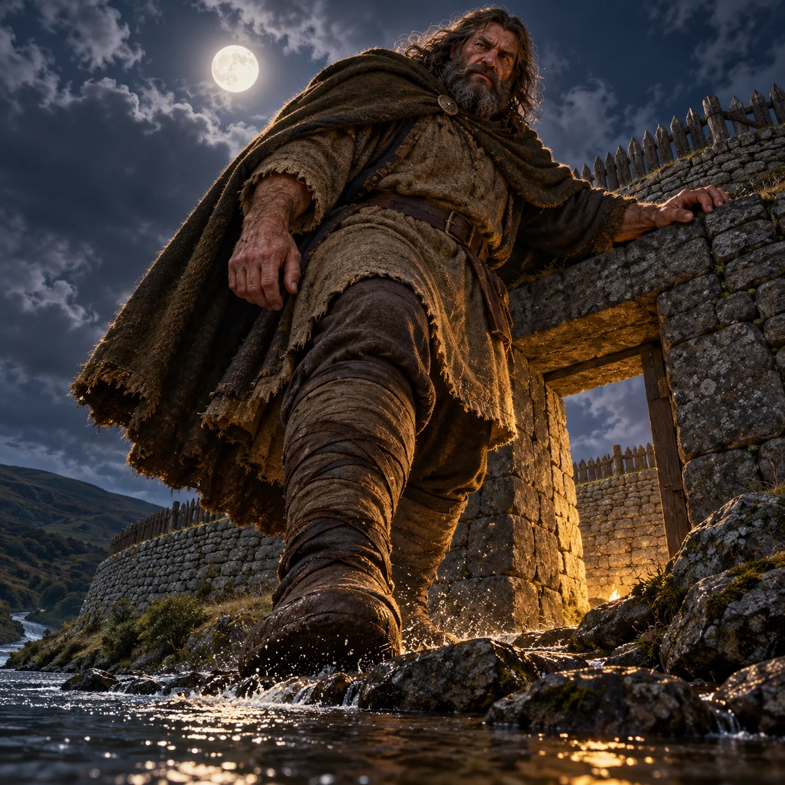
Gogfran sebagai raksasa humanoid Welsh yang keluar dari caer di atas sungai.
Aura: Skala raksasa mendominasi caer saat melangkah dari gerbang (gogfran-gawr-c02, gogfran-gawr-c15).
Audit ciri dan sumber
- [object Object]
- [object Object]
Native dan200px diperiksa: Uji Sangar7/7 ya. Giant melangkah keluar gerbang, bahu di atas lintel dan kaki besar menimbulkan cipratan biasa; subjek dominan. Satu kepala2mata2lengan2kaki sesuai humanoid, pakaian buram. Tiada efek gaib, teks/glyph/gore atau desain popculture.
Review sumberONE original square premium painterly cinematic Mythics illustration of Gogfran Gawr, the giant father of Gwenhwyfar in Welsh tradition.
ANATOMY: one enormous HUMAN GIANT, one head, two eyes, two arms, two legs, rough wool tunic and full opaque cloak and trousers; no horns, wings or weapons. [gogfran-gawr-c02,gogfran-gawr-c09]
MOMENT: stride out through the stone caer gateway and lean down toward the viewer, one powerful hand braced on the gate lintel, cloak dragged by his decisive step, intense commanding gaze.
POWER: no documented power; overwhelming physical giant size, motion and light only; no magic.
SCALE & CAMERA: extreme low angle at riverbank level; giant shoulders tower above the caer gate, stone fort as small scale reference; giant dominates whole frame, face unmistakable at thumbnail.
LIGHT & WEATHER: one dominant low moon source, deep walnut shadows, antique gold rim light, ordinary disturbed grit around his feet.
SURFACE: weathered wool, coarse hair, lined human skin and rough wet stone.
SETTING: the caer above the river at Aber Ysgyr near Aber Hodni in Brycheiniog. [gogfran-gawr-c15]
MOOD: awe-inspiring towering giant, active and imposing, never ordinary man standing for portrait.
HARD CONSTRAINTS: no text, glyphs, lettering, logo, border, watermark; no extra heads, eyes, limbs or fingers; no borrowed film/game/anime design; no nudity or gore; no generic glow aura, neon outline, energy ribbons. One square PNG at least1024x1024.
Heluo fish
Menunggu gambar yang lolos audit
Hoyau
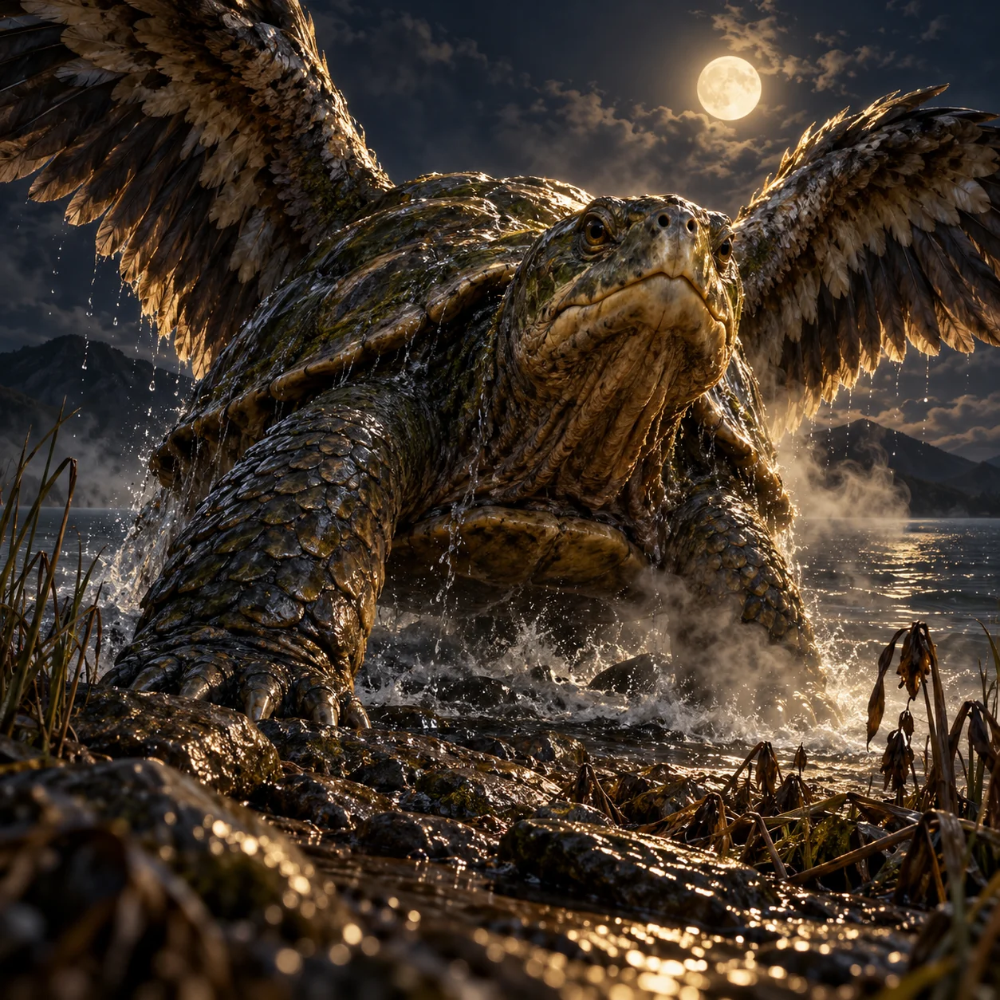
Living winged turtle variant c12, no mixed narrow-snouted serpent anatomy; wing material editorial
Aura: Kesan aktif berasal dari Rear out of Lake Toya toward the viewer with wings spread and forefeet pressing wet shore stones (hoyau-c12, hoyau-c07).
Audit ciri dan sumber
- [object Object]
- [object Object]
- [object Object]
Native dan200px diperiksa: UjiSangar7/7 ya. Kura-kura bersayap keluar danau dengan cangkang dan kaki jelas, dua sayap berbulu editorial. Kepala/mata2/kaki4 konsisten dengan kaki jauh terhalang badan. Uap bau nonluminous dan tanaman layu c07; tidak ada aura, gore atau teks.
Review sumberONE original square premium painterly cinematic Mythics illustration of Hoyau, the winged turtle manifestation of Hoyau Kamui of Lake Toya.
ANATOMY: one living TURTLE head, two eyes, stout shell-backed turtle body, four turtle legs, a short narrow turtle tail and exactly two wings; no serpent body or invented extra heads [hoyau-c12]
MOMENT: Rear out of Lake Toya toward the viewer with wings spread and forefeet pressing wet shore stones.
POWER: Foul nonluminous body vapor spreads downwind and nearby plants shrivel; no burning aura or humans injured [hoyau-c07]
SCALE & CAMERA: extreme low angle, close foreshortening, subject dominates square and identifying anatomy reads at200px; no invented giant scale unless documented.
LIGHT & WEATHER: one dominant moon source, deep warm walnut shadows, antique gold rim highlights, wet air and ordinary physical spray or grit appropriate to action.
SURFACE: tactile organic texture appropriate to anatomy, rough fur/feather/scales/cloth, wet stone, never plastic or statue.
SETTING: Lake Toya shore with reeds and dark water [hoyau-c09,hoyau-c12]
MOOD: dangerous imposing active moment, or reverent overwhelming majesty for sacred beings; never cute, calm, decorative or an ordinary animal/person.
HARD CONSTRAINTS: no text, glyphs, lettering, logo, border, watermark; no extra heads, eyes, limbs or fingers; no borrowed film/game/anime/comic design; no nudity or explicit gore; no generic glow aura, neon outline, energy ribbons or floating runes. One square PNG at least1024x1024.
Huay Chivo
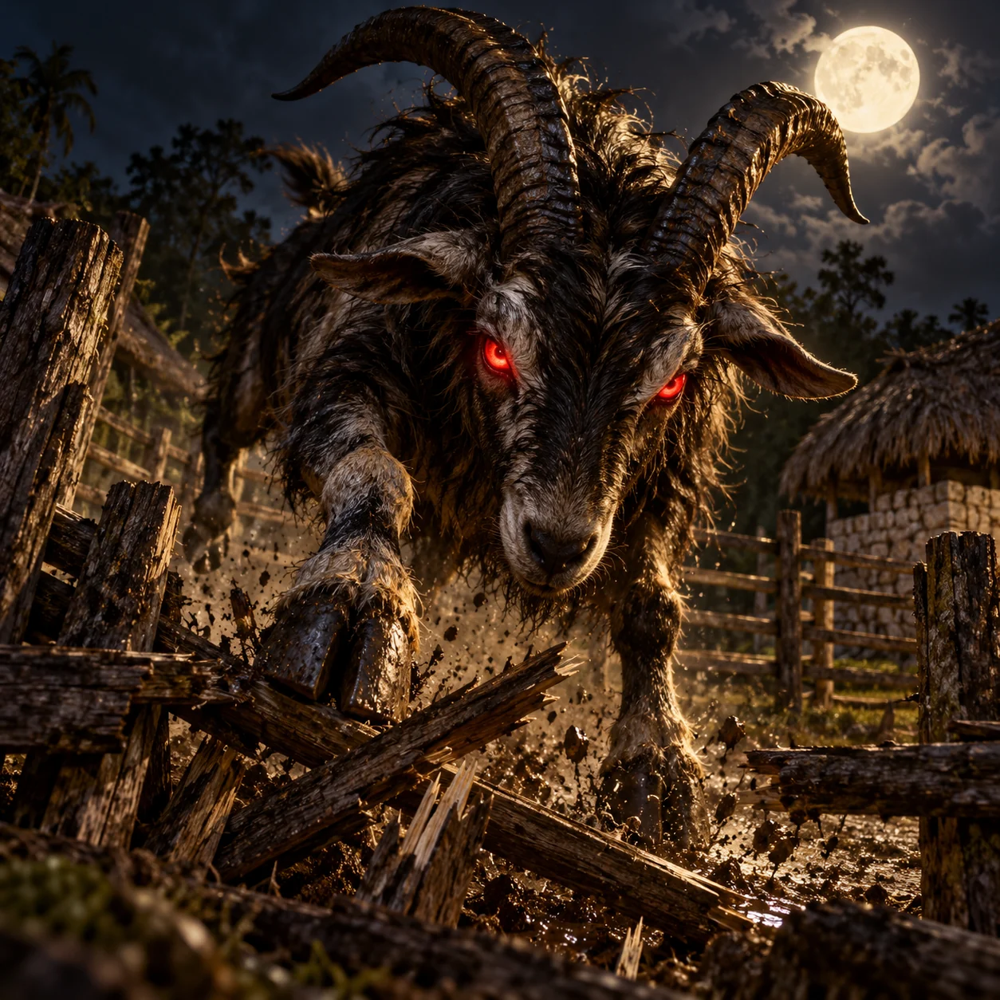
Goat transformation variant; no victims or gore, red eyes documented c01
Aura: Kesan aktif berasal dari Bound across the livestock enclosure toward the viewer, head low and eyes burning, front hooves striking the fence as it hunts (huay-chivo-c01, huay-chivo-c02, huay-chivo-c07).
Audit ciri dan sumber
- [object Object]
- [object Object]
- [object Object]
Native dan200px diperiksa: UjiSangar7/7 ya. Goat form menerjang pagar, dua mata merah terbakar c01 jelas pada thumbnail. Satu kepala2mata4kaki konsisten; kaki belakang tersembunyi foreshortening badan. Tidak ada api tubuh, korban, gore atau teks.
Review sumberONE original square premium painterly cinematic Mythics illustration of Huay Chivo, the Yucatan sorcerer in supernatural goat form with burning red eyes.
ANATOMY: one goat head, two intensely burning RED eyes, goat horns, four goat legs with hooves, shaggy goat body and short goat tail; no wings, no extra heads, no human torso [huay-chivo-c01,huay-chivo-c02]
MOMENT: Bound across the livestock enclosure toward the viewer, head low and eyes burning, front hooves striking the fence as it hunts.
POWER: Only the documented burning red eyes; no fire breath, flaming body or magic ribbons; ordinary shattered fence from the attack [huay-chivo-c01,huay-chivo-c07]
SCALE & CAMERA: extreme low angle, close foreshortening, subject dominates square and identifying anatomy reads at200px; no invented giant scale unless documented.
LIGHT & WEATHER: one dominant moon source, deep warm walnut shadows, antique gold rim highlights, wet air and ordinary physical spray or grit appropriate to action.
SURFACE: tactile organic texture appropriate to anatomy, rough fur/feather/scales/cloth, wet stone, never plastic or statue.
SETTING: a rural livestock enclosure near Valladolid in Yucatan at night [huay-chivo-c07]
MOOD: dangerous imposing active moment, or reverent overwhelming majesty for sacred beings; never cute, calm, decorative or an ordinary animal/person.
HARD CONSTRAINTS: no text, glyphs, lettering, logo, border, watermark; no extra heads, eyes, limbs or fingers; no borrowed film/game/anime/comic design; no nudity or explicit gore; no generic glow aura, neon outline, energy ribbons or floating runes. One square PNG at least1024x1024.
Ichchhadhari Nag
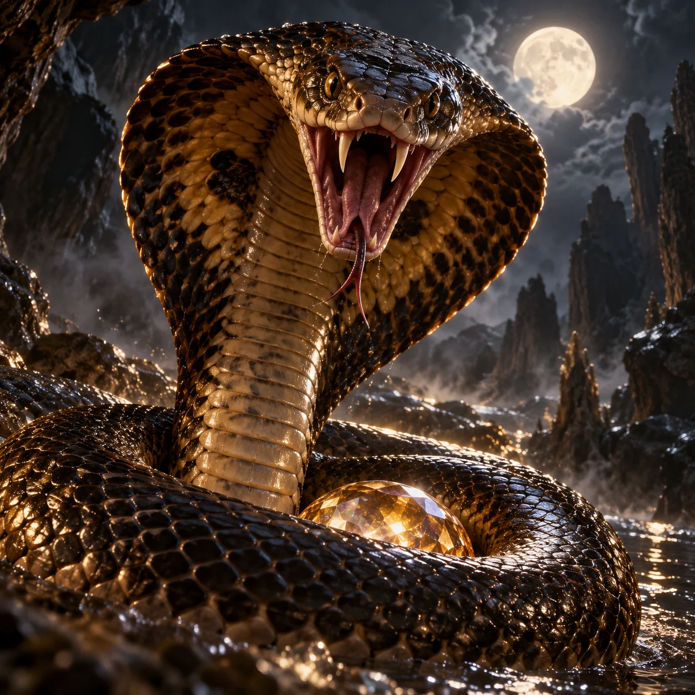
Respectful cobra form protecting possessed nagamani; jewel placement in coil and rocky scenery editorial
Aura: Kesan aktif berasal dari Rear sharply from its coils and lean its cobra head close toward the viewer while protecting the jewel; mouth opens in warning, hood stretches full width (ichchhadhari-nag-c01, ichchhadhari-nag-c04, ichchhadhari-nag-c09).
Audit ciri dan sumber
- [object Object]
- [object Object]
- [object Object]
Native dan200px UjiSangar7/7 ya. Cobra satu kepala2mata tanpa kaki/sayap, hood dominan dan mulut peringatan; nagamani di coil jelas, pantulan tanpa beam. Aksi melindungi jewel c09, kain tidak relevan, tanpa teks/gore/glyph.
Review sumberONE original square premium painterly cinematic Mythics illustration of Ichchhadhari Nag, a shapeshifting cobra and devoted serpent of Indian folklore.
ANATOMY: one living cobra, one head, two eyes, broad cobra hood, one continuous legless snake body; one precious nagamani jewel resting inside its protective coil, no humanoid torso or extra heads [ichchhadhari-nag-c01,ichchhadhari-nag-c04]
MOMENT: Rear sharply from its coils and lean its cobra head close toward the viewer while protecting the jewel; mouth opens in warning, hood stretches full width.
POWER: No magical aura or regeneration scene; menace only from documented cobra bite guarding nagamani; jewel catches natural moonlight without emitting beams [ichchhadhari-nag-c09]
SCALE & CAMERA: extreme low angle, close foreshortening, subject dominates square and identifying anatomy reads at200px; no invented giant scale unless documented.
LIGHT & WEATHER: one dominant moon source, deep warm walnut shadows, antique gold rim highlights, wet air and ordinary physical spray or grit appropriate to action.
SURFACE: tactile organic texture appropriate to anatomy, rough fur/feather/scales/cloth, wet stone, never plastic or statue.
SETTING: Naglok, depicted minimally as an unmarked shadowed rocky realm with no added temples or glyphs [ichchhadhari-nag-c12]
MOOD: dangerous imposing active moment, or reverent overwhelming majesty for sacred beings; never cute, calm, decorative or an ordinary animal/person.
HARD CONSTRAINTS: no text, glyphs, lettering, logo, border, watermark; no extra heads, eyes, limbs or fingers; no borrowed film/game/anime/comic design; no nudity or explicit gore; no generic glow aura, neon outline, energy ribbons or floating runes. One square PNG at least1024x1024.
Inkanyamba
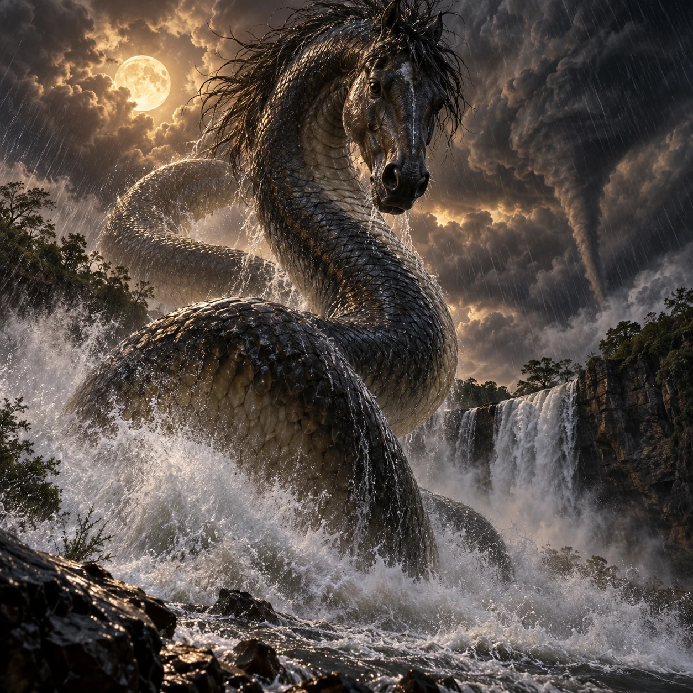
Giant horse-headed serpent variant, no modern artisan wings; scale sourced c06
Aura: Kesan aktif berasal dari Rise in enormous coiling loops from the pool beneath Howick Falls and loom downward toward the viewer (inkanyamba-c06, inkanyamba-c17, inkanyamba-c07, inkanyamba-c09).
Audit ciri dan sumber
- [object Object]
- [object Object]
- [object Object]
Native dan200px UjiSangar7/7 ya. Kepala kuda satu, dua mata dengan mata jauh profil, tubuh ular raksasa tanpa kaki/sayap membentang di atas air terjun. Tornado, hujan, storm dan spray c07/c09/c04 terbaca; tidak ada powerglow, teks/gore.
Review sumberONE original square premium painterly cinematic Mythics illustration of Inkanyamba, the giant horse-headed serpent and storm being associated with Howick Falls.
ANATOMY: one horse-shaped head, two eyes, huge continuous coiling serpent body stretching from pool toward storm sky, no legs or wings; dark wet scales, no invented horns [inkanyamba-c06,inkanyamba-c17]
MOMENT: Rise in enormous coiling loops from the pool beneath Howick Falls and loom downward toward the viewer.
POWER: Documented storm and tornado cloud funnel, driving rain and hail force water spray outward and bend shore vegetation; no neon or bodily glow [inkanyamba-c07,inkanyamba-c09]
SCALE & CAMERA: extreme low angle, close foreshortening, subject dominates square and identifying anatomy reads at200px; no invented giant scale unless documented.
LIGHT & WEATHER: one dominant moon source, deep warm walnut shadows, antique gold rim highlights, wet air and ordinary physical spray or grit appropriate to action.
SURFACE: tactile organic texture appropriate to anatomy, rough fur/feather/scales/cloth, wet stone, never plastic or statue.
SETTING: pool of Howick Falls on Umgeni River, waterfall small beside immense serpent [inkanyamba-c04]
MOOD: dangerous imposing active moment, or reverent overwhelming majesty for sacred beings; never cute, calm, decorative or an ordinary animal/person.
HARD CONSTRAINTS: no text, glyphs, lettering, logo, border, watermark; no extra heads, eyes, limbs or fingers; no borrowed film/game/anime/comic design; no nudity or explicit gore; no generic glow aura, neon outline, energy ribbons or floating runes. One square PNG at least1024x1024.
Jīvajīvaka
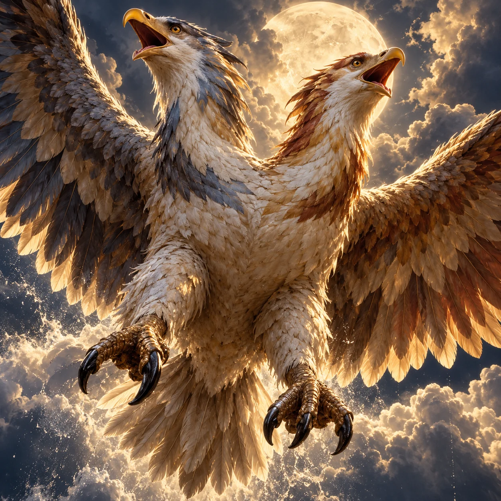
Two-headed eagle variant c08; plumage colors and male/female visual distinction editorial
Aura: Kesan aktif berasal dari Descend toward the viewer in a powerful wingbeat, both eagle heads raised with open beaks singing together; both faces clear, neither obscured (jivajivaka-c01, jivajivaka-c08, jivajivaka-c02, jivajivaka-c07).
Audit ciri dan sumber
- [object Object]
- [object Object]
- [object Object]
Native dan200px UjiSangar7/7 ya. Dua kepala eagle plumage berbeda bernyanyi, satu tubuh dua sayap dua kaki satu ekor. Tidak menggabungkan musician-human. Kedua kepala jelas pada thumbnail, empat mata anatomis dengan mata jauh profil; kepakan turun agung, bukan pose tenang. Tiada teks, glyph, aura atau gore.
Review sumberONE original square premium painterly cinematic Mythics illustration of Jivajivaka, the sacred Buddhist two-headed bird sharing one life in the Pure Land.
ANATOMY: EXACTLY TWO eagle heads on two separate necks joined to ONE shared bird body, one male and one female distinguished only by subtle plumage variation; four eyes total, exactly two feathered wings, two bird feet and one feathered tail; no human musician, no extra bodies [jivajivaka-c01,jivajivaka-c08]
MOMENT: Descend toward the viewer in a powerful wingbeat, both eagle heads raised with open beaks singing together; both faces clear, neither obscured.
POWER: No supernatural power effects; physical wingbeat and harmonious singing represented by open beaks only, no visual sound waves or glyphs [jivajivaka-c02,jivajivaka-c07]
SCALE & CAMERA: extreme low angle, close foreshortening, subject dominates square and identifying anatomy reads at200px; no invented giant scale unless documented.
LIGHT & WEATHER: one dominant moon source, deep warm walnut shadows, antique gold rim highlights, wet air and ordinary physical spray or grit appropriate to action.
SURFACE: tactile organic texture appropriate to anatomy, rough fur/feather/scales/cloth, wet stone, never plastic or statue.
SETTING: the Pure Land represented by a restrained cloud-filled sky, no invented religious buildings or figures [jivajivaka-c02]
MOOD: dangerous imposing active moment, or reverent overwhelming majesty for sacred beings; never cute, calm, decorative or an ordinary animal/person.
HARD CONSTRAINTS: no text, glyphs, lettering, logo, border, watermark; no extra heads, eyes, limbs or fingers; no borrowed film/game/anime/comic design; no nudity or explicit gore; no generic glow aura, neon outline, energy ribbons or floating runes. One square PNG at least1024x1024.
Khamot
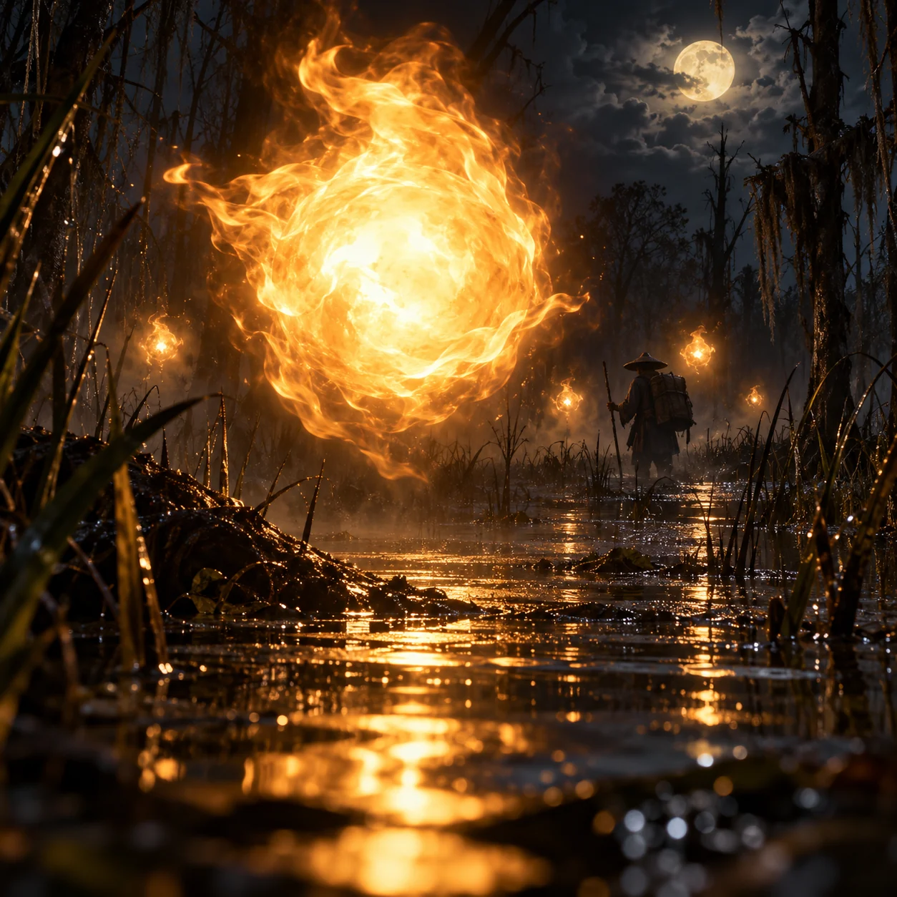
Active documented luminous manifestation, not landscape only; bright dominant ball with physical reflections
Aura: Kesan aktif berasal dari Flare directly ahead at the viewer above swamp water while additional distant flickering lights surround a lost traveler behind it (khamot-c02, khamot-c06, khamot-c07, khamot-c10).
Audit ciri dan sumber
- [object Object]
- [object Object]
- [object Object]
Native dan200px UjiSangar7/7 ya. Manifestasi bola cahaya api tanpa kepala/mata/badan mendominasi; reappearances mengelilingi pelancong, refleksi nyata di rawa dan batang. Cahaya berasal c02/c06/c07/c10, bukan aura figuratif. Aksi menyesatkan jelas, tanpa teks/glyph/gore.
Review sumberONE original square premium painterly cinematic Mythics illustration of Khamot, the shapeless Thai ghost that appears as a floating flickering light misleading forest travelers.
ANATOMY: no bodily form, no face, head, eyes, mouth or limbs; one LARGE floating ball of flickering warm fire-light as the central spirit manifestation, with a few smaller reappearances of the same light surrounding one distant fully clothed traveler [khamot-c02,khamot-c06,khamot-c07]
MOMENT: Flare directly ahead at the viewer above swamp water while additional distant flickering lights surround a lost traveler behind it.
POWER: Documented fire-like light reflects physically on water, trunks and reeds and misleading light surrounds traveler; not a glowing humanoid, no generic aura or rainbow mist [khamot-c02,khamot-c07,khamot-c10]
SCALE & CAMERA: extreme low angle, close foreshortening, subject dominates square and identifying anatomy reads at200px; no invented giant scale unless documented.
LIGHT & WEATHER: one dominant moon source, deep warm walnut shadows, antique gold rim highlights, wet air and ordinary physical spray or grit appropriate to action.
SURFACE: tactile organic texture appropriate to anatomy, rough fur/feather/scales/cloth, wet stone, never plastic or statue.
SETTING: damp marshy forest at night with a lost traveler [khamot-c02]
MOOD: dangerous imposing active moment, or reverent overwhelming majesty for sacred beings; never cute, calm, decorative or an ordinary animal/person.
HARD CONSTRAINTS: no text, glyphs, lettering, logo, border, watermark; no extra heads, eyes, limbs or fingers; no borrowed film/game/anime/comic design; no nudity or explicit gore; no generic glow aura, neon outline, energy ribbons or floating runes. One square PNG at least1024x1024.
Kishi
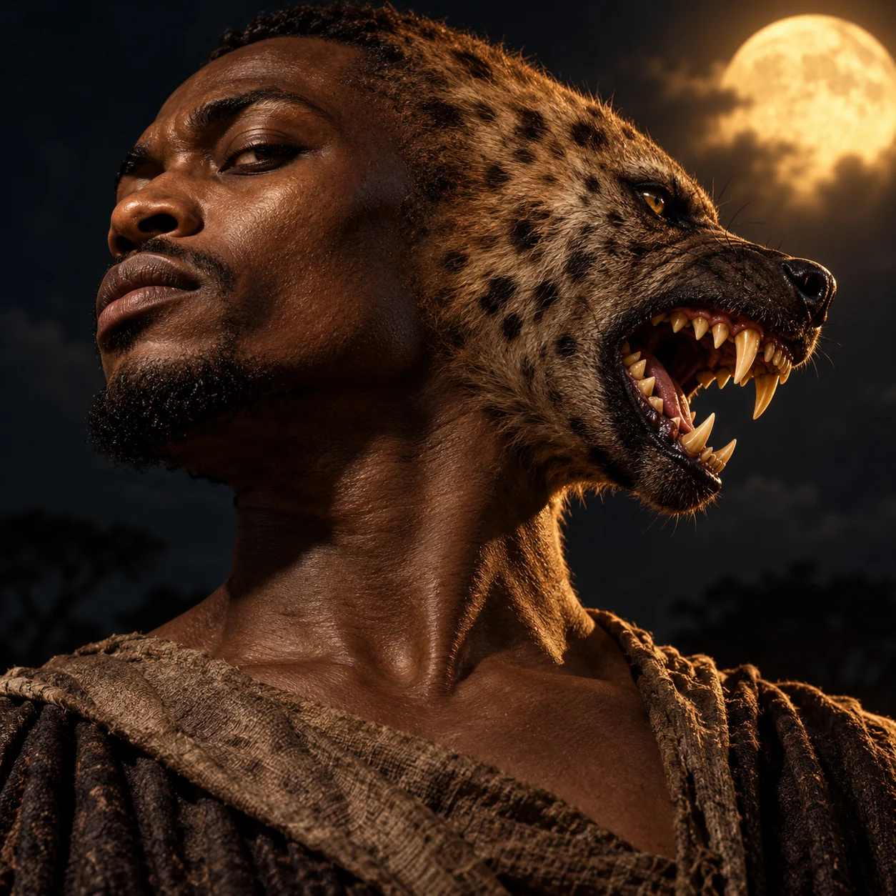
Two-faced c05 variant only, no many-headed c01 blending; both faces immediately countable
Aura: Kesan aktif berasal dari Twist the shared skull into clear side three-quarter view showing human face looking LEFT and hyena face looking RIGHT; step close toward viewer, rear hyena jaws open menacingly while front human expression invites (kishi-folklore-c05, kishi-folklore-c07, kishi-folklore-c06).
Audit ciri dan sumber
- [object Object]
- [object Object]
- [object Object]
Native dan200px UjiSangar7/7 ya. Satu cranialdome kontinu, humanface depan-kiri dan spottedhyena face belakang-kanan di atas satu leher manusia broad jelas; tidak ada hyena neck kedua. Rear jaw snarls/teeth c07, humanface deceptionc06, satu badan clothed. Limbs di luar crop tidakdiklaim terlihat. Tanpa manyheadsblending,teks,glyph,aura atau gore.
Review sumberONE original square premium painterly cinematic Mythics close-up of Kishi, the Angolan two-faced demon.
ANATOMY: Exactly ONE SINGLE HEAD with TWO FACES on its OPPOSITE FRONT AND BACK SURFACES, carried on exactly ONE SINGLE CENTRALLY PLACED BARE HUMAN NECK. The head is ONE CONTINUOUS CRANIAL DOME at ONE HEIGHT. Its front-left surface is a handsome adult African mans face. Its back-right OCCIPITAL SURFACE itself grows a HYENA FACE: spotted short fur, a hyena eye, a hyena muzzle and powerful open jaw with long sharp teeth. The HYENA FACE IS ANATOMY ON THE BACK OF THE HUMAN SKULL, not a complete second hyena head. NO HYENA NECK, NO FURRY THROAT COLUMN, NO SECOND HEAD, NO SECOND CROWN, NO ANIMAL HEAD MOUNTED ON SHOULDER. Shared single human neck is fully bare and entirely visible from skull base to shoulders, centered. Hyena lower jaw ends at the shared skulls chin level and MUST NOT descend into a second neck. One pair of shoulders, humanlike body with opaque cloth covering chest. [kishi-folklore-c05,kishi-folklore-c07]
MOMENT: Twist its ONE fused two-faced head aggressively in clear lateral THREE-QUARTER PROFILE; front human face looks LEFT seductively while the rear hyena facial muzzle opens RIGHT in a snarl, both opposite faces visible, the single neck tendons tense. Composition crop upper chest to top of shared skull, neck entirely visible, shoulders beneath one head, face fills image.
POWER: No supernatural effects. Documented human deception and hyena jaws threat only. [kishi-folklore-c06,kishi-folklore-c07]
SCALE & CAMERA: extreme low angle close-up, one head dominating, foreboding physical presence.
LIGHT & WEATHER: one hard warm moonrim source, deep dark shadows, one warm accent.
SURFACE: human skin merging at BACK OF SKULL into short spotted hyena facial fur, coarse opaque cloth.
SETTING: neutral dark Angolan night background. [kishi-folklore-c05]
MOOD: predatory uncanny frightening doubleface, active snarl, not ordinary man or twoheaded hybrid.
HARD CONSTRAINTS: Exactly ONECRANIUM ON ONENECK WITH TWOOPPOSITEFACES, never two separate heads or necks; no separate hyena ears required, no manyheadsc01 blending; no text,glyph,logo,border,watermark; no nudity/gore; no aura/neon/energy/borrowed filmgameanime design. One squarePNG>=1024.
Krasnoludek
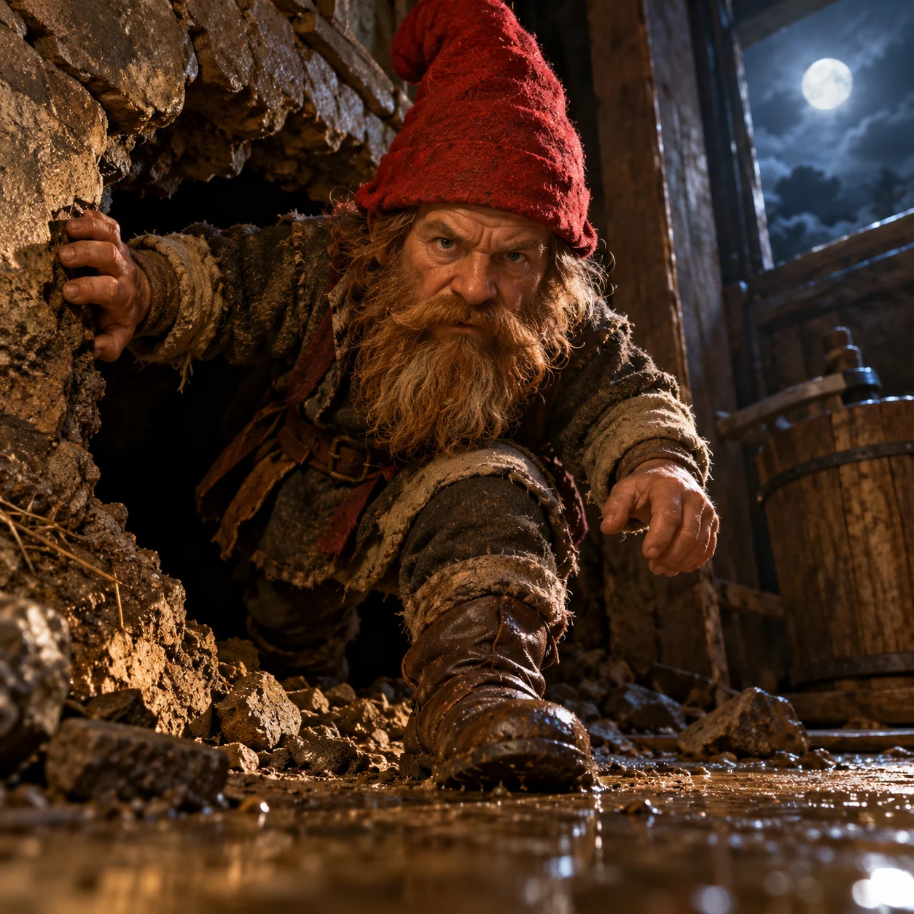
Helpful pointy-red-hat small humanoid variant, no mixed insect-size giant krosnalek; scale kept small with close camera
Aura: Kesan aktif berasal dari Emerge forcefully from a dark wall hole at the viewers floor-level camera, brace hands on the jagged opening and stride protectively toward viewer; sharp focused kindly stern gaze, not evil (krasnoludek-c01, krasnoludek-c06, krasnoludek-c05).
Audit ciri dan sumber
- [object Object]
- [object Object]
- [object Object]
Native dan200px UjiSangar7/7 ya. Small adult humanlike dwarf melangkah keluar lubang, pointed redhat besar jelas, dua tangan dan dua kaki konsisten. Tatapan stern protective, bukan maskot. Ukuran relatif lubang/ruang menjaga small form, tidak memakai giant variant; pakaian buram penuh. Tiada magic,teks,gore/glyph.
Review sumberONE original square premium painterly cinematic Mythics illustration of Krasnoludek, the small human-shaped helpful dwarf guardian in Polish folklore.
ANATOMY: one very small human-shaped adult dwarf, one head two eyes two arms two legs, unmistakable pointy RED hat; full opaque rough clothes and boots; normal human eyes, no horns, no giant transformation [krasnoludek-c01,krasnoludek-c06]
MOMENT: Emerge forcefully from a dark wall hole at the viewers floor-level camera, brace hands on the jagged opening and stride protectively toward viewer; sharp focused kindly stern gaze, not evil.
POWER: No magic effects; protective presence from close-up, movement and documented helpful guardian role [krasnoludek-c05,krasnoludek-c06]
SCALE & CAMERA: extreme low angle, close foreshortening, subject dominates square and identifying anatomy reads at200px; no invented giant scale unless documented.
LIGHT & WEATHER: one dominant moon source, deep warm walnut shadows, antique gold rim highlights, wet air and ordinary physical spray or grit appropriate to action.
SURFACE: tactile organic texture appropriate to anatomy, rough fur/feather/scales/cloth, wet stone, never plastic or statue.
SETTING: a dark hole in an old human dwelling with rough earth and stone [krasnoludek-c05,krasnoludek-c06]
MOOD: dangerous imposing active moment, or reverent overwhelming majesty for sacred beings; never cute, calm, decorative or an ordinary animal/person.
HARD CONSTRAINTS: no text, glyphs, lettering, logo, border, watermark; no extra heads, eyes, limbs or fingers; no borrowed film/game/anime/comic design; no nudity or explicit gore; no generic glow aura, neon outline, energy ribbons or floating runes. One square PNG at least1024x1024.
Kun
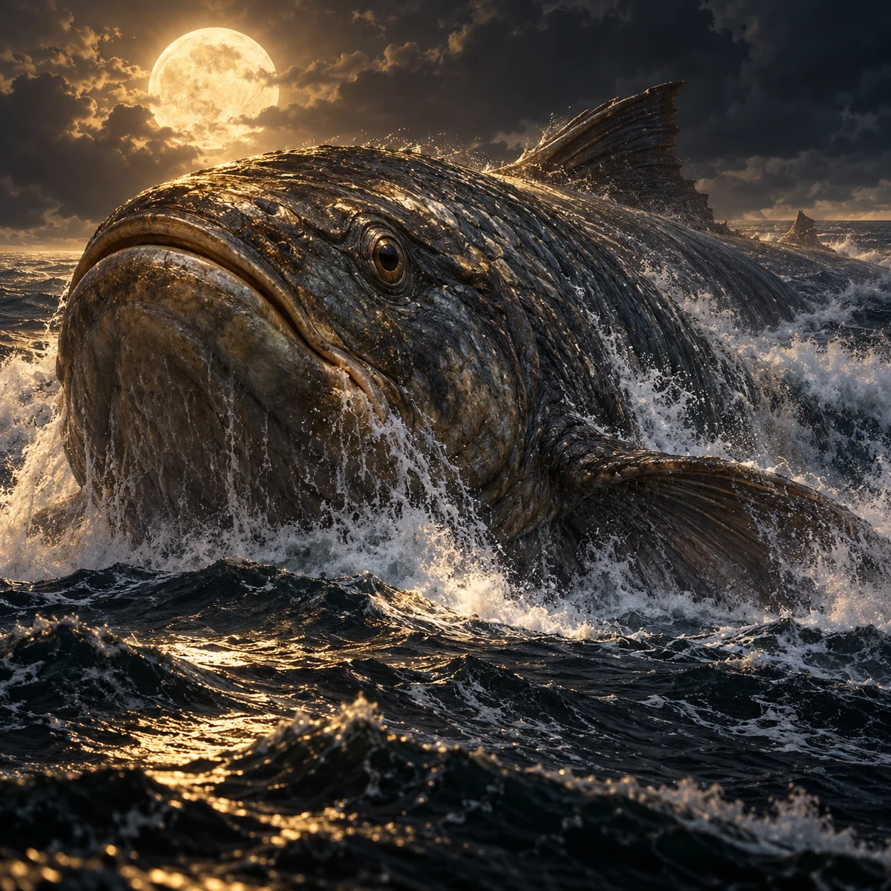
Colossal fish form only, not whale interpretation or Peng hybrid
Aura: Kesan aktif berasal dari Rise just below the surface so its enormous fish head breaks through the dark northern sea, an immense back and fin extend toward horizon (kun-c01, kun-c02, kun-c05).
Audit ciri dan sumber
- [object Object]
- [object Object]
- [object Object]
Native dan200px UjiSangar7/7 ya. Colossal fish tunggal dengan sirip/dorsal dan scales muncul dari darksea, kepala dominan dan badan membentang ke horizon. Satu kepala2mata dengan mata jauh profile tersembunyi, sirip bukan sayap, tanpa blowhole. Air terdorong badan fisik, tanpa kuasa/glyph/teks/gore.
Review sumberONE original square premium painterly cinematic Mythics illustration of Kun, the immensely vast fish of the northern dark sea in Zhuangzi.
ANATOMY: one colossal FISH with one fish head two eyes, one continuous fish body, paired pectoral fins and single tail; no mammal blowhole, no bird wings or dragon horns [kun-c01,kun-c02,kun-c05]
MOMENT: Rise just below the surface so its enormous fish head breaks through the dark northern sea, an immense back and fin extend toward horizon.
POWER: No magical transformation shown and no power beams; ocean water displaced by immense fish body [kun-c02,kun-c05]
SCALE & CAMERA: extreme low angle, close foreshortening, subject dominates square and identifying anatomy reads at200px; no invented giant scale unless documented.
LIGHT & WEATHER: one dominant moon source, deep warm walnut shadows, antique gold rim highlights, wet air and ordinary physical spray or grit appropriate to action.
SURFACE: tactile organic texture appropriate to anatomy, rough fur/feather/scales/cloth, wet stone, never plastic or statue.
SETTING: the northern dark sea Tianchi north of Qiongfa, tiny distant waves and horizon as scale reference [kun-c02,kun-c06]
MOOD: dangerous imposing active moment, or reverent overwhelming majesty for sacred beings; never cute, calm, decorative or an ordinary animal/person.
HARD CONSTRAINTS: no text, glyphs, lettering, logo, border, watermark; no extra heads, eyes, limbs or fingers; no borrowed film/game/anime/comic design; no nudity or explicit gore; no generic glow aura, neon outline, energy ribbons or floating runes. One square PNG at least1024x1024.
Manaul
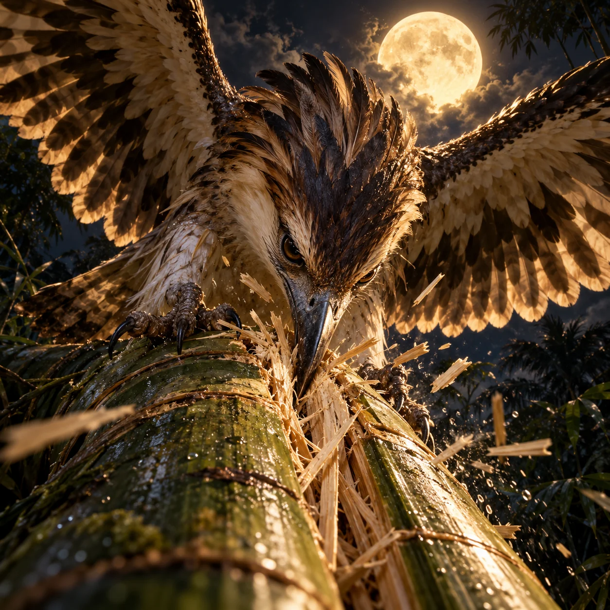
Tagalog bamboo omen-bird narrative only, no Pavon revenge-rocks or fixed modern eagle design
Aura: Kesan aktif berasal dari Drive its beak hard into primordial bamboo while wings sweep toward viewer, wood fibers split open from physical impact, strong revered gaze (manaul-c04, manaul-c24).
Audit ciri dan sumber
- [object Object]
- [object Object]
- [object Object]
Native dan200px UjiSangar7/7 ya. Bird tunggal mematuk bambu terbelah dengan sayap2/kaki2/mata2, kepala dominan dan gerak tegas. Spesies tidak diklaim; plumage/crest editorial generic bird. Tidak menggabungkan Pavon batu/pembalasan atau menampilkan manusia keluar. Tanpa aura,teks,gore/glyph.
Review sumberONE original square premium painterly cinematic Mythics illustration of Manaul, the Philippine omen bird named Manaul sent to open primordial bamboo.
ANATOMY: one living bird head two eyes, pointed natural bird beak, one bird body, exactly two feathered wings and two legs, no secure fixed eagle species claimed; natural unspecified bird plumage [manaul-c04,manaul-c24]
MOMENT: Drive its beak hard into primordial bamboo while wings sweep toward viewer, wood fibers split open from physical impact, strong revered gaze.
POWER: Physical bamboo splitting only; no gods, humans emerging, sound glyphs or magic glow [manaul-c04]
SCALE & CAMERA: extreme low angle, close foreshortening, subject dominates square and identifying anatomy reads at200px; no invented giant scale unless documented.
LIGHT & WEATHER: one dominant moon source, deep warm walnut shadows, antique gold rim highlights, wet air and ordinary physical spray or grit appropriate to action.
SURFACE: tactile organic texture appropriate to anatomy, rough fur/feather/scales/cloth, wet stone, never plastic or statue.
SETTING: the bamboo stalk of the Tagalog creation narrative, dark surrounding sky and vegetation editorial [manaul-c04]
MOOD: dangerous imposing active moment, or reverent overwhelming majesty for sacred beings; never cute, calm, decorative or an ordinary animal/person.
HARD CONSTRAINTS: no text, glyphs, lettering, logo, border, watermark; no extra heads, eyes, limbs or fingers; no borrowed film/game/anime/comic design; no nudity or explicit gore; no generic glow aura, neon outline, energy ribbons or floating runes. One square PNG at least1024x1024.
Mokumokuren
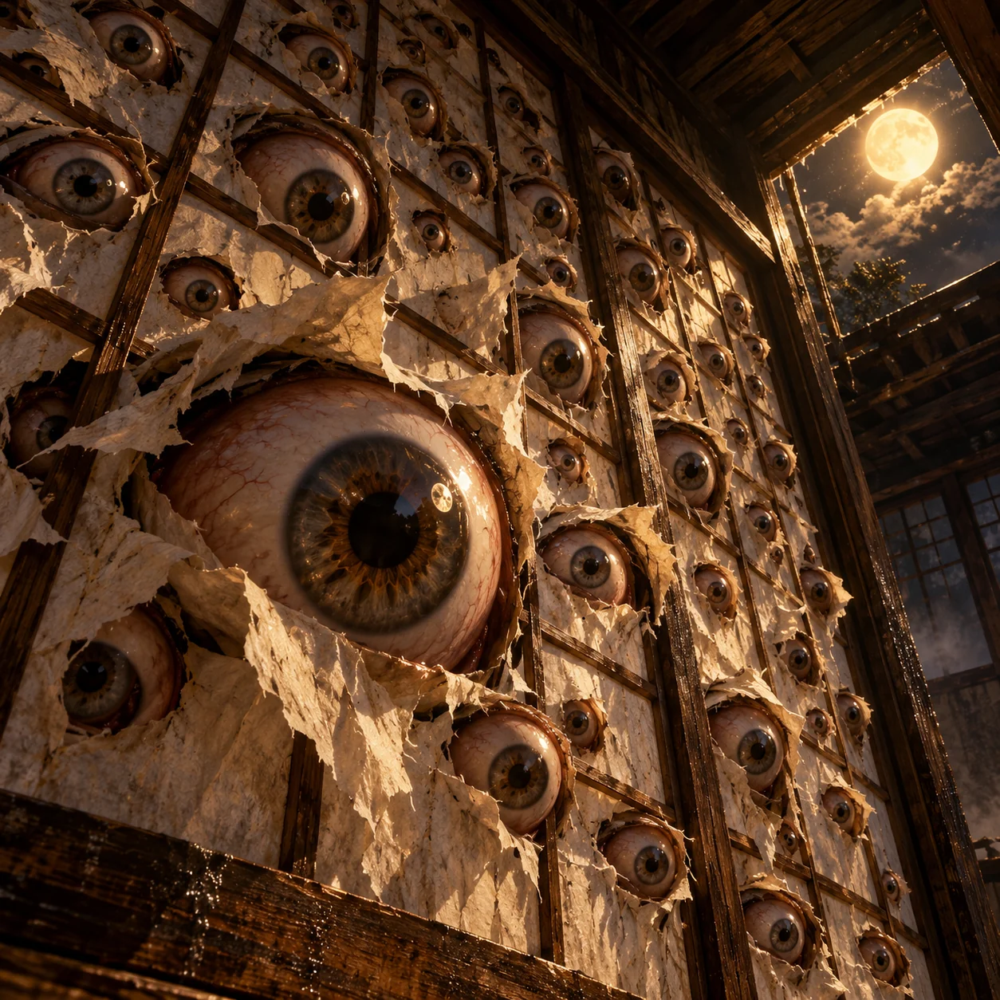
Harmless but uncanny many-eyed wall being, active eyes rather than ordinary empty landscape
Aura: Kesan aktif berasal dari Pop dozens of watchful eyes out from deep paper holes toward the viewers low camera; nearest bulging eye huge by close perspective, other eyes densely cover whole shoji screen; torn paper edges flutter (mokumokuren-c02, mokumokuren-c07, mokumokuren-c11).
Audit ciri dan sumber
- [object Object]
- [object Object]
- [object Object]
Native dan200px UjiSangar7/7 ya. Puluhan eyeballs tumbuh dari holes kertas shoji dan mengawasi, nearesteye foreshortened jelas. Tanpa mouth/head/human limbs atau pupilglow. Screen beragen mata mendominasi bukan rumah kosong, paperedges/action c07; tidak ada gore atau teks.
Review sumberONE original square premium painterly cinematic Mythics illustration of Mokumokuren, the Japanese yokai of countless eyes emerging from unrepaired shoji.
ANATOMY: no humanoid body, heads, mouth, arms or legs; COUNTLESS separate ghostly eyes with normal irises and pupils emerge directly from holes in torn shoji paper, each eye connected to paper hole without gore; eyes fully open and directed toward viewer [mokumokuren-c02,mokumokuren-c07,mokumokuren-c11]
MOMENT: Pop dozens of watchful eyes out from deep paper holes toward the viewers low camera; nearest bulging eye huge by close perspective, other eyes densely cover whole shoji screen; torn paper edges flutter.
POWER: Documented eyes emerge and stare; no magical glowing pupils, energy or injured humans [mokumokuren-c07]
SCALE & CAMERA: extreme low angle, close foreshortening, subject dominates square and identifying anatomy reads at200px; no invented giant scale unless documented.
LIGHT & WEATHER: one dominant moon source, deep warm walnut shadows, antique gold rim highlights, wet air and ordinary physical spray or grit appropriate to action.
SURFACE: tactile organic texture appropriate to anatomy, rough fur/feather/scales/cloth, wet stone, never plastic or statue.
SETTING: torn neglected shoji screen in a ruined haunted Japanese house, wood grid and deep interior shadows [mokumokuren-c02,mokumokuren-c06,mokumokuren-c11]
MOOD: dangerous imposing active moment, or reverent overwhelming majesty for sacred beings; never cute, calm, decorative or an ordinary animal/person.
HARD CONSTRAINTS: no text, glyphs, lettering, logo, border, watermark; no extra heads, eyes, limbs or fingers; no borrowed film/game/anime/comic design; no nudity or explicit gore; no generic glow aura, neon outline, energy ribbons or floating runes. One square PNG at least1024x1024.
Nine sons of the dragon
Menunggu gambar yang lolos audit
Oozlum bird
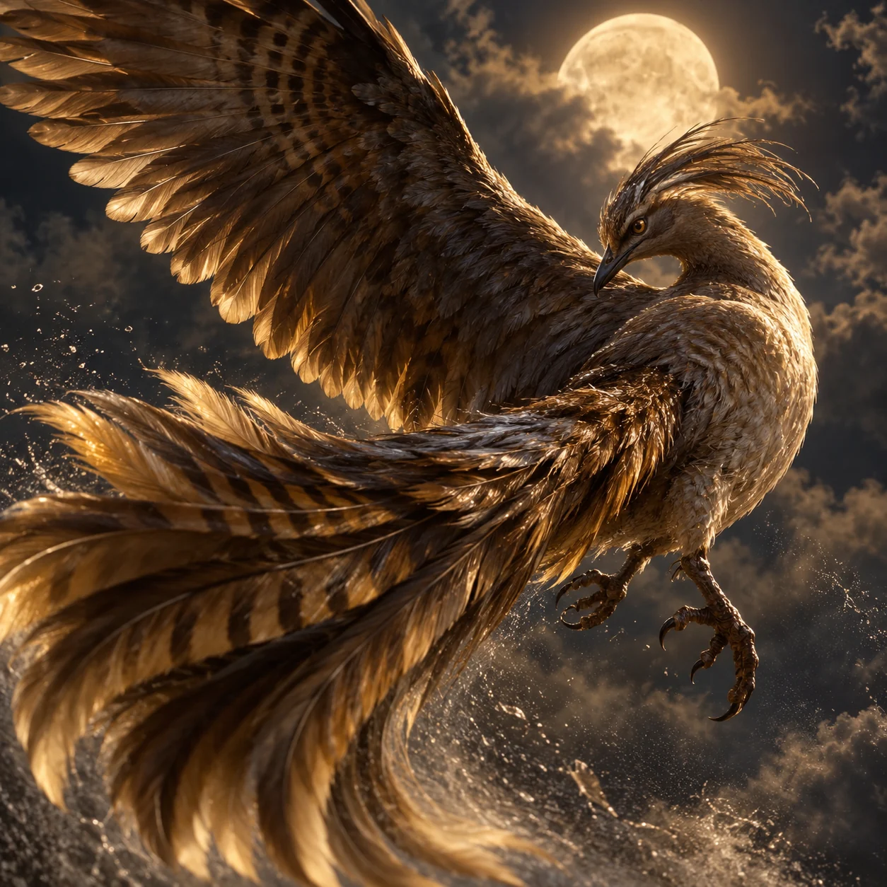
One-winged weejy variant c09, tight close framing; no comic film design or explicit self-disappearance
Aura: Kesan aktif berasal dari Bank sharply toward viewer in a tight circular backwards flight with tail leading and head craned back to admire its own beautiful tail; single wing beats hard, feathered body twists around its curve (oozlum-bird-c01, oozlum-bird-c09, oozlum-bird-c03).
Audit ciri dan sumber
- [object Object]
- [object Object]
- [object Object]
Native dan200px UjiSangar7/7 ya. One-winged weejy variant satu sayap jelas, dua feet, satu kepala2mata anatomis matajauh profil. Tailleading headmelengkung ke belakang menatap tailfeathers, bank circular aktif. Tail/wingdominant membuat uncanny aerial majesty, tanpa wound, aura,tek/gore.
Review sumberONE original square premium painterly cinematic Mythics illustration of Oozlum Bird, the one-winged weejy weejy variant of Australian and British legendary bird.
ANATOMY: one fully feathered bird, one head two eyes, exactly ONE feathered WING on one side, opposite shoulder naturally smooth feathered with no wound or stump; two bird feet and one beautiful feather tail; no extra wings, no monstrous teeth [oozlum-bird-c01,oozlum-bird-c09]
MOMENT: Bank sharply toward viewer in a tight circular backwards flight with tail leading and head craned back to admire its own beautiful tail; single wing beats hard, feathered body twists around its curve.
POWER: Documented tight backwards circular flight; only ordinary dust displaced by wingbeat, no energy ring or disappearance vortex [oozlum-bird-c03,oozlum-bird-c09]
SCALE & CAMERA: extreme low angle, close foreshortening, subject dominates square and identifying anatomy reads at200px; no invented giant scale unless documented.
LIGHT & WEATHER: one dominant moon source, deep warm walnut shadows, antique gold rim highlights, wet air and ordinary physical spray or grit appropriate to action.
SURFACE: tactile organic texture appropriate to anatomy, rough fur/feather/scales/cloth, wet stone, never plastic or statue.
SETTING: a neutral shadowed open-air backdrop, no asserted geographic landmark [oozlum-bird-c01]
MOOD: dangerous imposing active moment, or reverent overwhelming majesty for sacred beings; never cute, calm, decorative or an ordinary animal/person.
HARD CONSTRAINTS: no text, glyphs, lettering, logo, border, watermark; no extra heads, eyes, limbs or fingers; no borrowed film/game/anime/comic design; no nudity or explicit gore; no generic glow aura, neon outline, energy ribbons or floating runes. One square PNG at least1024x1024.
Pugot
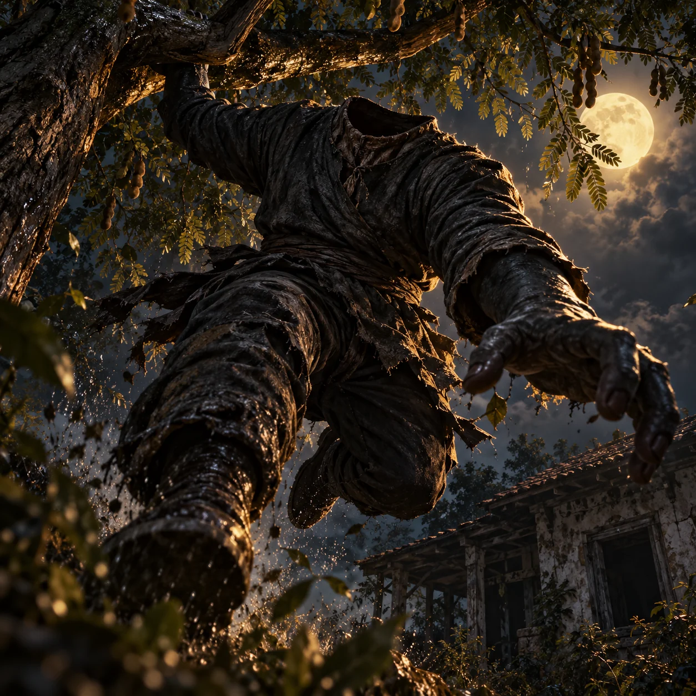
Relatively harmless huge headless spirit, not cigar-bearing headed giant or human racial caricature
Aura: Kesan aktif berasal dari Move rapidly down from a huge tamarind branch directly toward low camera, one hand grips branch overhead and the other reaches toward viewer; cloth and leaves jerk with its fast movement (pugot-c01, pugot-c16, pugot-c03).
Audit ciri dan sumber
- [object Object]
- [object Object]
- [object Object]
Native dan200px UjiSangar7/7 ya. Large headless black figure turun cepat dari tamarind, hand2/leg2 konsisten, collar kosong kering tanpa kepala/wound. Dark opaque clothes/skin jelas, leavesdebris physical c03; imposing tapi tanpa korban/evil harm. Tiada cigar/headedvariant,teks,glyph,gore atau aura.
Review sumberONE original square premium painterly cinematic Mythics illustration of Pugot, the huge black headless nocturnal spirit of Ilocos folklore.
ANATOMY: one large black headless humanoid spirit, exactly two arms and two legs, no head, eyes or facial features; dry non-graphic empty cloth collar, fully opaque dark tunic and trousers, no blood or exposed neck wound [pugot-c01,pugot-c16]
MOMENT: Move rapidly down from a huge tamarind branch directly toward low camera, one hand grips branch overhead and the other reaches toward viewer; cloth and leaves jerk with its fast movement.
POWER: No magic transformation effects; speed and imposing headless anatomy only, ordinary leaves displaced by movement [pugot-c03]
SCALE & CAMERA: extreme low angle, close foreshortening, subject dominates square and identifying anatomy reads at200px; no invented giant scale unless documented.
LIGHT & WEATHER: one dominant moon source, deep warm walnut shadows, antique gold rim highlights, wet air and ordinary physical spray or grit appropriate to action.
SURFACE: tactile organic texture appropriate to anatomy, rough fur/feather/scales/cloth, wet stone, never plastic or statue.
SETTING: a dark tamarind tree beside an abandoned house at night [pugot-c02,pugot-c19]
MOOD: dangerous imposing active moment, or reverent overwhelming majesty for sacred beings; never cute, calm, decorative or an ordinary animal/person.
HARD CONSTRAINTS: no text, glyphs, lettering, logo, border, watermark; no extra heads, eyes, limbs or fingers; no borrowed film/game/anime/comic design; no nudity or explicit gore; no generic glow aura, neon outline, energy ribbons or floating runes. One square PNG at least1024x1024.
Qiuniu
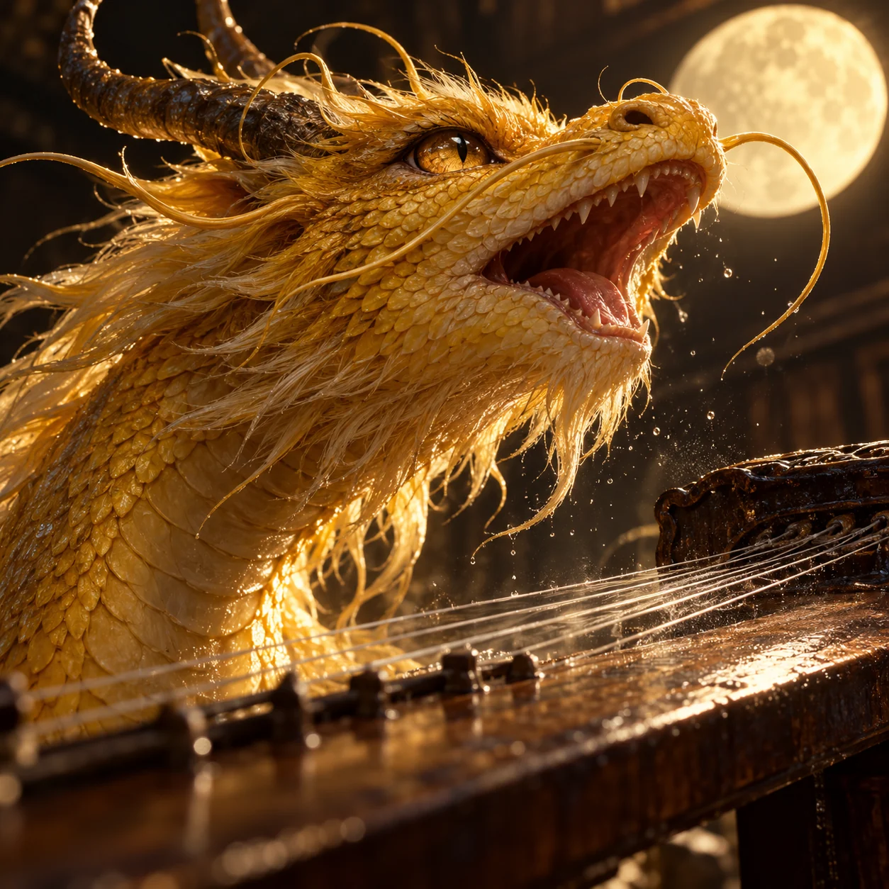
Living small yellow dragon close-up raised-head/open-mouth c07; horn/scale anatomy only, music visible as physical instrument
Aura: Kesan aktif berasal dari Lift its horned head sharply beside the wooden head of a qin while opening mouth in intense musical response; the small dragon is alive, eyes focused and scale texture taut, not a carved instrument ornament (qiuniu-c02, qiuniu-c06, qiuniu-c07, qiuniu-c03).
Audit ciri dan sumber
- [object Object]
- [object Object]
- [object Object]
Native dan200px UjiSangar7/7 ya. Small living yellow dragonhead horn/scales dan mouthopen raisedhead c06/c07 dominan di sisiqin; badan di luar bingkai tidak invent countlimbs. Qin physically visible, strings tanpa floatingmusicnotes; bukan carvedornament. Eye2 anatomis farprofile, tiada glyph/teks/glow/gore.
Review sumberONE original square premium painterly cinematic Mythics illustration of Qiuniu, the small yellow scaled horned dragon who loves and plays music.
ANATOMY: one living SMALL YELLOW DRAGON HEAD, two eyes, horns and yellow scales, head raised with mouth open; frame is a CLOSE-UP OF HEAD AND NECK ONLY with rest of body outside frame, do not invent limb count or wings [qiuniu-c02,qiuniu-c06,qiuniu-c07]
MOMENT: Lift its horned head sharply beside the wooden head of a qin while opening mouth in intense musical response; the small dragon is alive, eyes focused and scale texture taut, not a carved instrument ornament.
POWER: No supernatural music beams; ordinary qin strings visibly vibrating, no floating notes, text, glyphs or magical light [qiuniu-c03,qiuniu-c06]
SCALE & CAMERA: extreme low angle, close foreshortening, subject dominates square and identifying anatomy reads at200px; no invented giant scale unless documented.
LIGHT & WEATHER: one dominant moon source, deep warm walnut shadows, antique gold rim highlights, wet air and ordinary physical spray or grit appropriate to action.
SURFACE: tactile organic texture appropriate to anatomy, rough fur/feather/scales/cloth, wet stone, never plastic or statue.
SETTING: beside a qin string instrument in a neutral dark indoor musical space, no invented palace or specific geography [qiuniu-c03,qiuniu-c06]
MOOD: dangerous imposing active moment, or reverent overwhelming majesty for sacred beings; never cute, calm, decorative or an ordinary animal/person.
HARD CONSTRAINTS: no text, glyphs, lettering, logo, border, watermark; no extra heads, eyes, limbs or fingers; no borrowed film/game/anime/comic design; no nudity or explicit gore; no generic glow aura, neon outline, energy ribbons or floating runes. One square PNG at least1024x1024.
Rhita Gawr
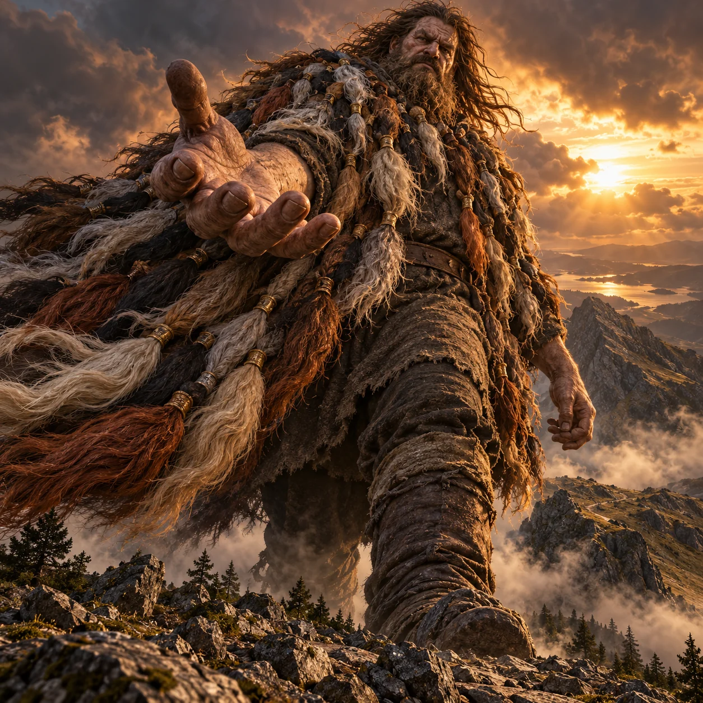
Rhita Gawr menantang duel di Yr Wyddfa dengan jubah dari janggut para raja.
Aura: No magical effects are documented; menace comes from giant strength and the king-beard trophy cloak, physical wind and grit [rhita-gawr-c05, rhita-gawr-c06, rhita-gawr-c07]
Audit ciri dan sumber
- [object Object]
- [object Object]
- [object Object]
Native dan preview200 dilihat: raksasa menantang dengan tangan berforeshortening, tepat satu kepala dua lengan; jubah berbagai janggut terpotong jelas c06, gunung c01. Aksi melangkah dan pines kecil menegaskan ukuran raksasa. Uji Sangar7/7, tanpa efek magis/glyph/gore.
Review sumberONE original square premium painterly cinematic Mythics illustration of Rhita Gawr, the Welsh giant who wore a cloak made from the beards of kings.
ANATOMY: One adult humanoid giant, one head, two eyes, two arms and two legs; a heavy cloak entirely made of many clearly distinct long cut kingly beards sewn together, over a fully opaque rough tunic; natural giant anatomy, no extra limbs [rhita-gawr-c01, rhita-gawr-c06]
MOMENT: Stride down the mountain toward the viewer and thrust one huge open hand forward in a challenge to duel, his beard-trophy cloak whipping across the foreground.
POWER: No magical effects are documented; menace comes from giant strength and the king-beard trophy cloak, physical wind and grit [rhita-gawr-c05, rhita-gawr-c06, rhita-gawr-c07]
SCALE & CAMERA: extreme low angle; towering giant filling the frame from huge hands to head, tiny mountain pines below imply the documented giant scale; subject fills the image, distinguishing anatomy readable at 200 pixels.
LIGHT & WEATHER: one dominant amber moonbeam or dying-sun shaft, deep walnut shadows, high contrast rim light, physical dust or mist, no even daylight.
SURFACE: coarse tangled beard hair, cracked weathered skin, rough wool tunic, sharp stone.
SETTING: The rugged mountain Yr Wyddfa in Wales, rocky summit with a small distant path [rhita-gawr-c01]
MOOD: dangerous or awe-inspiring, imposing active presence, never cute, neutral, decorative or calm.
HARD CONSTRAINTS: one square image, native resolution at least 1024x1024; no text, glyphs, runes, inscriptions, symbols, lettering, logo, border, frame or watermark; all architecture and objects plain and uninscribed; no extra heads, limbs or fingers; no borrowed film, game, anime or comic design; no nudity or explicit gore; fully opaque clothing; no generic glowing aura, neon outline, energy ribbons or floating symbols.
Seelkee
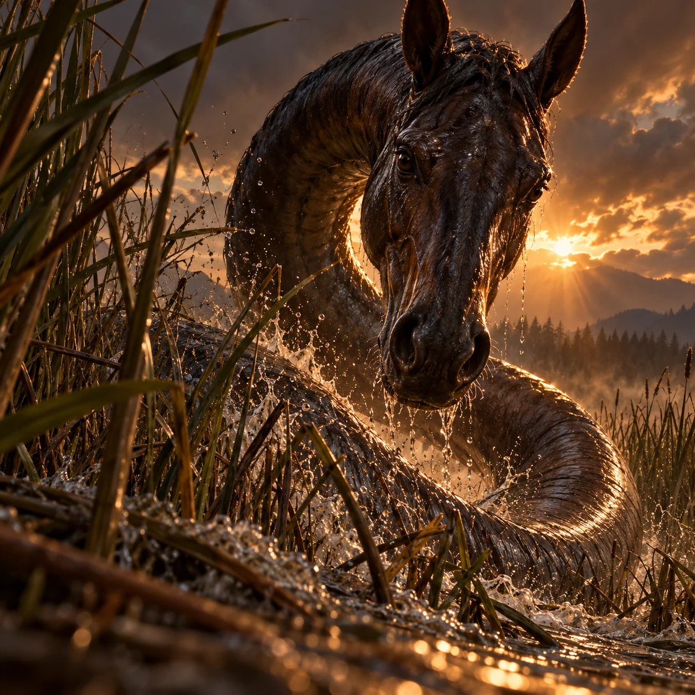
Seelkee varian satu kepala kuda dan tubuh ular panjang c03/c08, tidak dicampur varian dua kepala.
Aura: No curse victim or magical effects; motion of the serpent physically parts reeds and throws swamp water into the air [seelkee-c03, seelkee-c08]
Audit ciri dan sumber
- [object Object]
- [object Object]
- [object Object]
Native+200 dilihat: satu kepala kuda bermulut panjang dan dua telinga panjang c08, satu badan ular panjang tanpa tungkai c03; muncul aktif di marsh Chilliwack c01/c06 dengan cipratan gerak fisik. Tidak mencampur dua kepala. Uji Sangar7/7.
Review sumberONE original square premium painterly cinematic Mythics illustration of Seelkee, the horse-headed serpent-like lake beast of Chilliwack swamps, in the single-headed recollected variant.
ANATOMY: Exactly ONE horse head with a long horse mouth and two long horse ears, two eyes; one long smooth sea-serpent body, entirely limbless, no mane of tentacles, no wings; ten-to-fifteen-foot creature. NOT the separate two-headed variant [seelkee-c03, seelkee-c08]
MOMENT: Emerge from the reed channel and thrust its long horse muzzle down toward the viewer, coiling its smooth serpent body through the immediate foreground.
POWER: No curse victim or magical effects; motion of the serpent physically parts reeds and throws swamp water into the air [seelkee-c03, seelkee-c08]
SCALE & CAMERA: extreme low angle; water-level low angle at a ten-to-fifteen-foot serpent, dominant close framing with nearby reeds as scale; subject fills the image, distinguishing anatomy readable at 200 pixels.
LIGHT & WEATHER: one dominant amber moonbeam or dying-sun shaft, deep walnut shadows, high contrast rim light, physical dust or mist, no even daylight.
SURFACE: smooth black-brown wet snake hide, wet horse muzzle and ears, muddy marsh water.
SETTING: Winding swamp channels and marsh reeds in present-day Chilliwack, British Columbia [seelkee-c01, seelkee-c06]
MOOD: dangerous or awe-inspiring, imposing active presence, never cute, neutral, decorative or calm.
HARD CONSTRAINTS: one square image, native resolution at least 1024x1024; no text, glyphs, runes, inscriptions, symbols, lettering, logo, border, frame or watermark; all architecture and objects plain and uninscribed; no extra heads, limbs or fingers; no borrowed film, game, anime or comic design; no nudity or explicit gore; fully opaque clothing; no generic glowing aura, neon outline, energy ribbons or floating symbols.
Shenlong
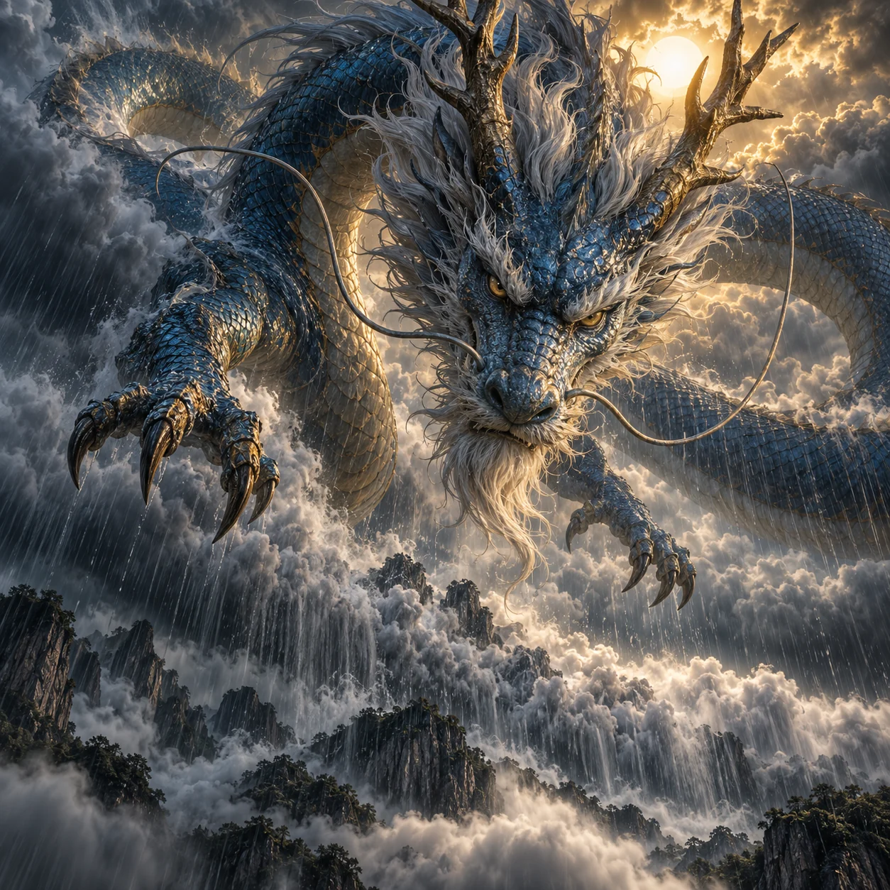
Shenlong bersisik biru-azure memerintah awan hujan, bukan naga pop-culture.
Aura: Dense physical rain and storm cloud fronts surge across the sky under the rain-governing dragon; no lightning bolts from eyes or magical beams [shenlong-c01, shenlong-c02, shenlong-c04]
Audit ciri dan sumber
- [object Object]
- [object Object]
- [object Object]
Native+200 dilihat: naga bersisik azure c04 satu kepala dengan badan panjang dan tungkai konsisten sebagian tertutup clouds; menukik dominan pada awan hujan c01/c04, tidak lightning-eye. Dua mata dan ciri naga jelas. Uji Sangar7/7, tanpa glyph/gore.
Review sumberONE original square premium painterly cinematic Mythics illustration of Shenlong, the azure-scaled spirit dragon governing storms, clouds and rain.
ANATOMY: One original naturalistic Chinese spirit dragon with azure scales: exactly one dragon head, two eyes, one long scaly sinuous body, four natural clawed limbs, no wings, no modern cartoon design; head and long neck dominate [shenlong-c01, shenlong-c04, shenlong-c05]
MOMENT: Dive down from storm clouds toward the viewer, coil the long azure body across the sky and command the heavy rain with an imposing downward gaze.
POWER: Dense physical rain and storm cloud fronts surge across the sky under the rain-governing dragon; no lightning bolts from eyes or magical beams [shenlong-c01, shenlong-c02, shenlong-c04]
SCALE & CAMERA: extreme low angle; extreme low angle from below the clouds; large dragon scale c03, tiny dark ridges far below; subject fills the image, distinguishing anatomy readable at 200 pixels.
LIGHT & WEATHER: one dominant amber moonbeam or dying-sun shaft, deep walnut shadows, high contrast rim light, physical dust or mist, no even daylight.
SURFACE: rough wet azure scales with warm antique-gold edge reflections, rain slick ridges.
SETTING: Above rain-bearing clouds, the heavens into which the dragon rises [shenlong-c03, shenlong-c05]
MOOD: dangerous or awe-inspiring, imposing active presence, never cute, neutral, decorative or calm.
HARD CONSTRAINTS: one square image, native resolution at least 1024x1024; no text, glyphs, runes, inscriptions, symbols, lettering, logo, border, frame or watermark; all architecture and objects plain and uninscribed; no extra heads, limbs or fingers; no borrowed film, game, anime or comic design; no nudity or explicit gore; fully opaque clothing; no generic glowing aura, neon outline, energy ribbons or floating symbols.
Shippeitarō
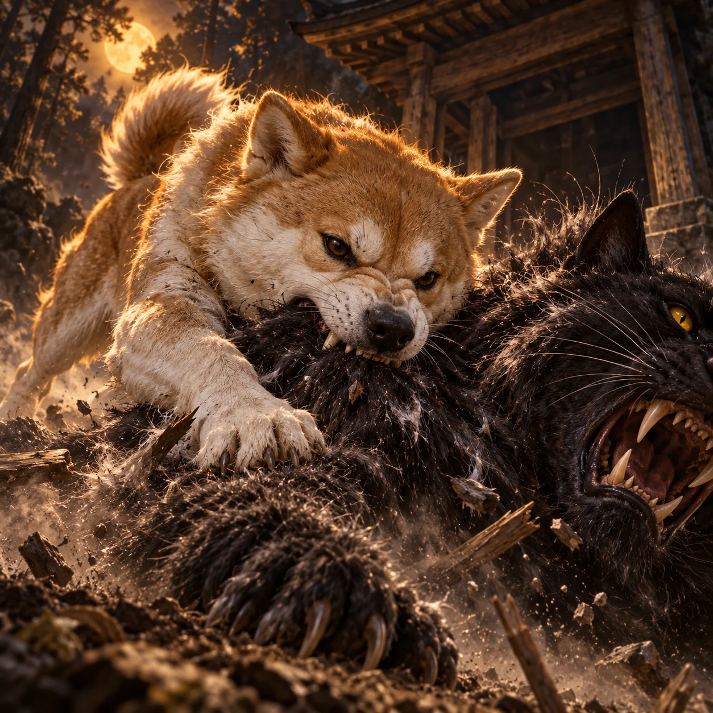
Shippeitaro menyerang kucing hitam besar Spirit of the Mountain pada varian Violet Fairy Book.
Aura: Physical attack with the dog teeth seizing the mountain cat spirit; fur, splinters and dust scatter, absolutely no blood or gore [shippeitaro-c03, shippeitaro-c11]
Audit ciri dan sumber
- [object Object]
- [object Object]
- [object Object]
Native+200 dilihat: anjing besar heroik menggigit bulu monster kucing hitam c10/c11, aksi clash mendominasi, kepala anjing dan satu kepala kucing terpisah terbaca; paws/fur/splinters fisik, tanpa darah. Hutan dan chapel plain c07. Uji Sangar7/7.
Review sumberONE original square premium painterly cinematic Mythics illustration of Shippeitarō, the brave helper dog whose teeth seize the huge black mountain-spirit cat in the Violet Fairy Book variant.
ANATOMY: Shippeitaro is ONE great natural dog, one canine head, two eyes, four legs and one tail, coarse tawny-white fur. One secondary huge black monster cat is partly visible, with natural feline anatomy; dog is clearly the main subject. No humanoid dog, no extra heads or limbs [shippeitaro-c01, shippeitaro-c08, shippeitaro-c10, shippeitaro-c11]
MOMENT: Leap from the foreground and fasten its teeth fiercely into the monster black cat fur, pushing forward in a brave protective attack, face and straining forepaws closest to the viewer.
POWER: Physical attack with the dog teeth seizing the mountain cat spirit; fur, splinters and dust scatter, absolutely no blood or gore [shippeitaro-c03, shippeitaro-c11]
SCALE & CAMERA: extreme low angle; very low close angle during the clash, dog face fills over one third of the frame; hero dog and huge cat in the same compressed action plane; subject fills the image, distinguishing anatomy readable at 200 pixels.
LIGHT & WEATHER: one dominant amber moonbeam or dying-sun shaft, deep walnut shadows, high contrast rim light, physical dust or mist, no even daylight.
SURFACE: coarse bristling dog fur, ragged black cat fur, weathered plain timber, torn earth.
SETTING: At midnight in the shadowed forest chapel where the cat spirits gathered, plain uninscribed wooden entrance and forest behind [shippeitaro-c07, shippeitaro-c10]
MOOD: fierce brave protective courage, a dangerous active fight, no calm pet portrait.
HARD CONSTRAINTS: one square image, native resolution at least 1024x1024; no text, glyphs, runes, inscriptions, symbols, lettering, logo, border, frame or watermark; all architecture and objects plain and uninscribed; no extra heads, limbs or fingers; no borrowed film, game, anime or comic design; no nudity or explicit gore; fully opaque clothing; no generic glowing aura, neon outline, energy ribbons or floating symbols.
Siuru
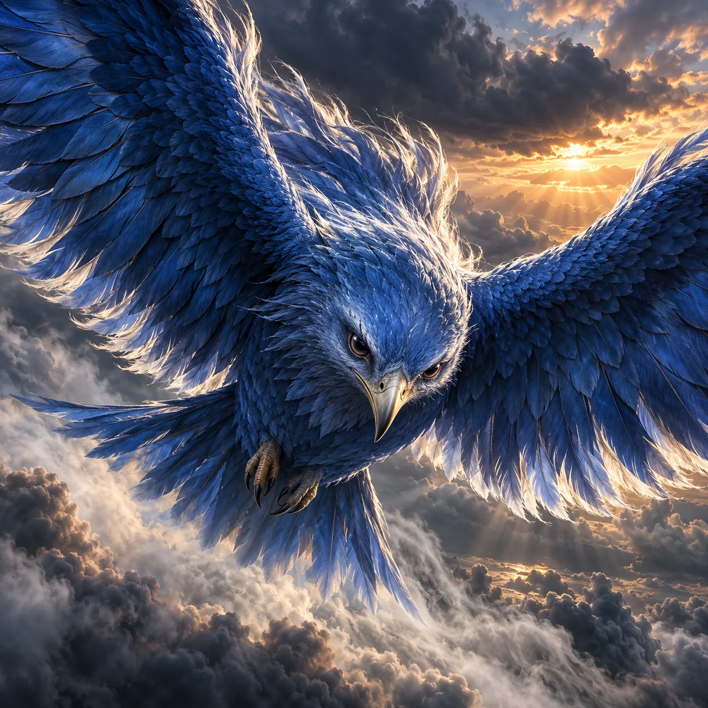
Siuru burung dua sayap biru berbulu sutra dalam perjalanan melintasi tiga dunia.
Aura: Fly and glide through the three-world journey with wings lighter than wind; only physical wind sweeps the silken feathers and tears ordinary mist around the wings, no light trails or magic aura [siuru-c04, siuru-c09, siuru-c10]
Audit ciri dan sumber
- [object Object]
- [object Object]
- [object Object]
Native+200 dilihat: satu burung dua sayap biru besar berbulu sutra c04/c09, kepala menunduk dalam aksi wingbeat dan dua kaki tertarik; sayap/feather tips fisik dan awan c10 tanpa aura. Keagungan dari close-flight, bukan skala raksasa. Uji Sangar7/7.
Review sumberONE original square premium painterly cinematic Mythics illustration of Siuru, the fabulous blue-winged silken-feathered bird called Taara's daughter in Kalevipoeg canto XIX.
ANATOMY: Exactly ONE fabulous bird, one head, two eyes, one beak, exactly TWO expansive BLUE feathered wings, two ordinary bird feet tucked naturally, one feathered tail. Silken feathers and wind-light wings; no human face or body; no extra wings [siuru-c01, siuru-c04, siuru-c07, siuru-c09]
MOMENT: Wheel sharply toward the viewer in a wind-borne flight, beat both broad blue wings into the foreground with silken feather tips swept backward by the speed, stare downward with overwhelming resolve.
POWER: Fly and glide through the three-world journey with wings lighter than wind; only physical wind sweeps the silken feathers and tears ordinary mist around the wings, no light trails or magic aura [siuru-c04, siuru-c09, siuru-c10]
SCALE & CAMERA: extreme low angle; extremely close tracking view from beneath the flying bird, wings occupy nearly the whole image; no invented giant size or human comparison; subject fills the image, distinguishing anatomy readable at 200 pixels.
LIGHT & WEATHER: one low dying-sun shaft edging dark cobalt-blue silk feathers, deep walnut cloud shadows, vigorous mist gusts.
SURFACE: silken yet individually tactile blue flight feathers, wind-ragged feather edges, natural beak.
SETTING: High air during her flight over the three worlds; dark layered cloud horizons beneath the bird, not a literal map or labeled diagram [siuru-c10]
MOOD: awe-inspiring active mythic flight, overwhelming wings and purposeful gaze, never cute songbird or calm perch.
HARD CONSTRAINTS: one square image, native resolution at least 1024x1024; no text, glyphs, runes, inscriptions, symbols, lettering, logo, border, frame or watermark; all architecture and objects plain and uninscribed; no extra heads, limbs or fingers; no borrowed film, game, anime or comic design; no nudity or explicit gore; fully opaque clothing; no generic glowing aura, neon outline, energy ribbons or floating symbols.
Strix (mythology)
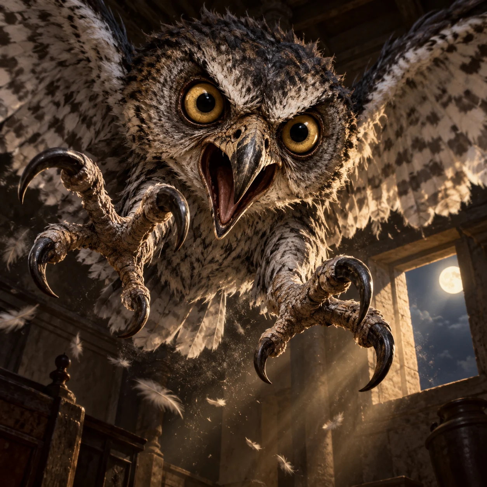
Strix varian Ovid dengan kepala besar, goggle eyes, sayap abu-putih dan cakar kait, menyerbu kamar tanpa korban.
Aura: No magical effects; night-flight and screeching predatory attack, feathers and real dust burst through the air. No baby, victim, injury, blood or gore [strix-mythology-c04, strix-mythology-c05, strix-mythology-c06]
Audit ciri dan sumber
- [object Object]
- [object Object]
- [object Object]
Native+200 dilihat: kepala sangat besar dua goggle eyes, paruh rapacious, dua sayap grey-blotched dan dua kaki hooked claws c03/c04; screech dan swoop menyerbu kamar c06. Tanpa bayi/korban/darah, tanpa glyph. Uji Sangar7/7.
Review sumberONE original square premium painterly cinematic Mythics illustration of Strix (mythology), the sinister night-flying large-headed bird with goggle eyes and hooked claws described in Ovid's Fasti.
ANATOMY: ONE menacing bird with an abnormally large single head, exactly two wide staring goggle eyes, a sharply rapacious hooked beak, exactly two greyish-white wings with grey-blotched feathers, two feet ending in long hooked claws, one tail; no human witch torso [strix-mythology-c03, strix-mythology-c04]
MOMENT: Screech and swoop through the small chamber window straight toward the viewer, fling both hooked feet forward to seize with its head closest and glaring eyes hugely readable.
POWER: No magical effects; night-flight and screeching predatory attack, feathers and real dust burst through the air. No baby, victim, injury, blood or gore [strix-mythology-c04, strix-mythology-c05, strix-mythology-c06]
SCALE & CAMERA: extreme low angle; extreme low close angle from the chamber floor, huge bird head filling much of the image and claws thrust toward lens; no extra animals; subject fills the image, distinguishing anatomy readable at 200 pixels.
LIGHT & WEATHER: one narrow amber moonbeam through the window, low-key walnut shadows, dust motes.
SURFACE: grey-blotched coarse feathers, cracked horn beak, hooked natural talons.
SETTING: Dark ancient Roman chambers of Proca with a small plain uninscribed window, no cradle or infant in view [strix-mythology-c06, strix-mythology-c07, strix-mythology-c08]
MOOD: dangerous or awe-inspiring, imposing active presence, never cute, neutral, decorative or calm.
HARD CONSTRAINTS: one square image, native resolution at least 1024x1024; no text, glyphs, runes, inscriptions, symbols, lettering, logo, border, frame or watermark; all architecture and objects plain and uninscribed; no extra heads, limbs or fingers; no borrowed film, game, anime or comic design; no nudity or explicit gore; fully opaque clothing; no generic glowing aura, neon outline, energy ribbons or floating symbols.
Teng (mythology)
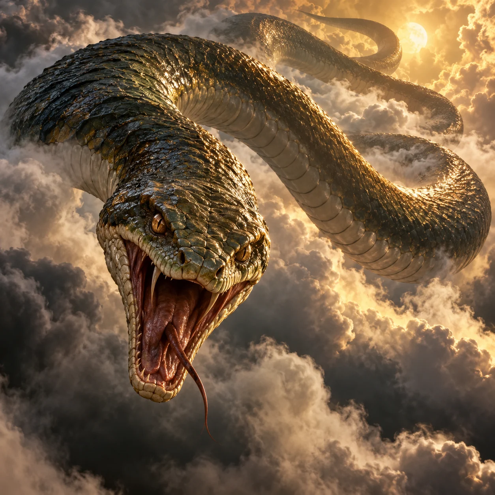
Tengshe varian ular terbang tanpa kaki atau sayap yang menunggang awan.
Aura: Ride the physical clouds and mist, flying without feet; strong ordinary cloud currents pour around its coils, no colored ribbons or magic aura [teng-mythology-c04, teng-mythology-c06, teng-mythology-c08, teng-mythology-c09]
Audit ciri dan sumber
- [object Object]
- [object Object]
- [object Object]
Native+200 dilihat: satu ular dengan badan panjang mengudara dalam mist; nol kaki/tangan/sayap/tanduk c06/c08, kepala dan dua mata menatap konfrontatif, mulut hiss aktif. Cloud-riding c04/c09 jelas; tanpa aura/glyph. Uji Sangar7/7.
Review sumberONE original square premium painterly cinematic Mythics illustration of Teng (mythology), the soaring footless divine serpent riding clouds and mist in the classical Chinese accounts.
ANATOMY: ONE long flying snake-serpent with a single serpentine head, two eyes, one continuous coiling scaly body and tail; absolutely ZERO feet, ZERO legs, ZERO arms, ZERO wings, no horns; the documented footless flying-snake form [teng-mythology-c02, teng-mythology-c06, teng-mythology-c08]
MOMENT: Plunge in a great sinuous curve toward the viewer out of dense cloud, lower its snake head to confront us, mouth open in a fierce serpentine hiss while its body visibly remains airborne.
POWER: Ride the physical clouds and mist, flying without feet; strong ordinary cloud currents pour around its coils, no colored ribbons or magic aura [teng-mythology-c04, teng-mythology-c06, teng-mythology-c08, teng-mythology-c09]
SCALE & CAMERA: extreme low angle; extreme low close angle beneath the flying serpent, snake head and neck filling foreground; long body curves through the rest of the frame, no size comparator; subject fills the image, distinguishing anatomy readable at 200 pixels.
LIGHT & WEATHER: one dominant amber moonbeam or dying-sun shaft, deep walnut shadows, high contrast rim light, physical dust or mist, no even daylight.
SURFACE: weathered wet walnut-green serpent scales, tactile pale belly plates, dense natural mist.
SETTING: High clouds and mist through which Teng drifts and rides [teng-mythology-c04, teng-mythology-c07, teng-mythology-c09]
MOOD: dangerous or awe-inspiring, imposing active presence, never cute, neutral, decorative or calm.
HARD CONSTRAINTS: one square image, native resolution at least 1024x1024; no text, glyphs, runes, inscriptions, symbols, lettering, logo, border, frame or watermark; all architecture and objects plain and uninscribed; no extra heads, limbs or fingers; no borrowed film, game, anime or comic design; no nudity or explicit gore; fully opaque clothing; no generic glowing aura, neon outline, energy ribbons or floating symbols.
Thunderdell
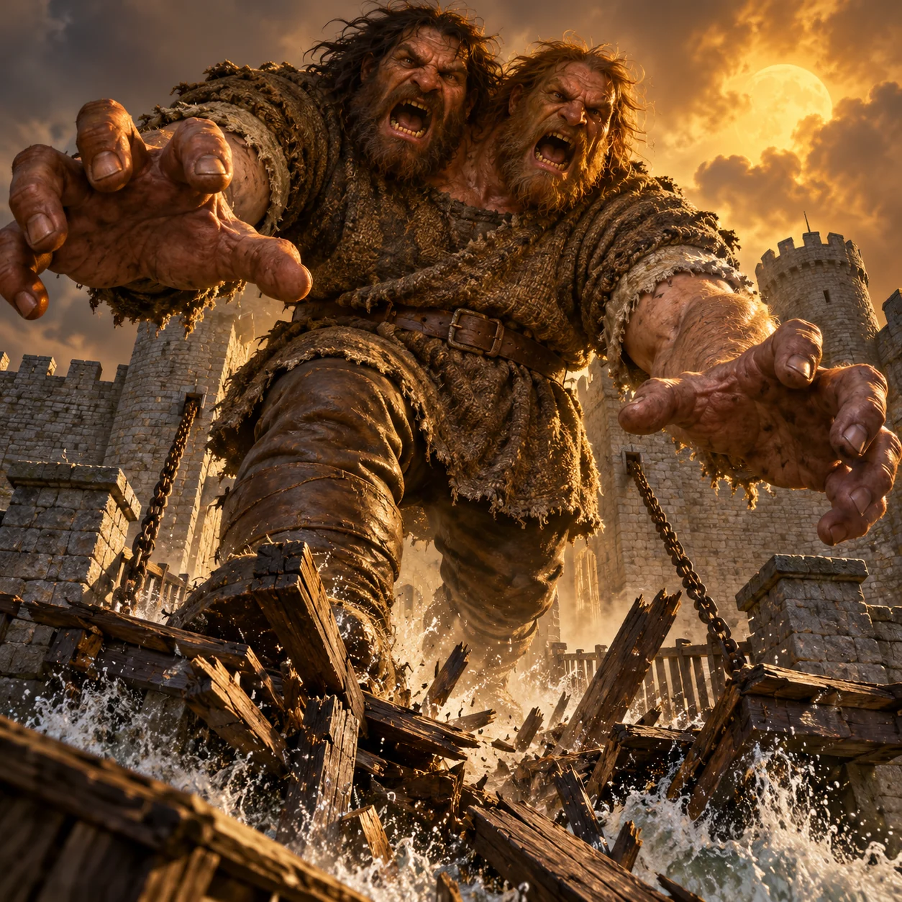
Thunderdell tepat dua kepala mengejar di jembatan angkat yang pecah oleh beratnya.
Aura: His documented great weight physically breaks the wooden drawbridge; splintered timbers fall into the moat with real water spray. No magical effects or gore [thunderdell-c08, thunderdell-c09]
Audit ciri dan sumber
- [object Object]
- [object Object]
- [object Object]
Native+200 dilihat: tepat dua kepala pada satu tubuh, dua tangan dengan anatomi jari konsisten; kedua wajah membentak penuh terlihat c01/c06/c08. Satu kaki maju meremukkan drawbridge, splinters dan air nyata c09. Uji Sangar7/7, tanpa glyph/gore.
Review sumberONE original square premium painterly cinematic Mythics illustration of Thunderdell, the two-headed Cornish giant who chased Jack and broke the drawbridge with his great weight.
ANATOMY: ONE enormous humanoid giant with exactly TWO distinct heads and TWO necks on ONE body, each head has two eyes and one mouth; both heads fully visible side by side and turned toward viewer. Exactly TWO arms and TWO legs; full opaque rough wool tunic and leather trousers. No extra heads or arms [thunderdell-c01, thunderdell-c06, thunderdell-c08, thunderdell-c09]
MOMENT: Charge toward the viewer across the drawbridge, bellow from both visible faces, reach forward with two huge hands as the timbers buckle under his weight.
POWER: His documented great weight physically breaks the wooden drawbridge; splintered timbers fall into the moat with real water spray. No magical effects or gore [thunderdell-c08, thunderdell-c09]
SCALE & CAMERA: extreme low angle; extreme low angle at the cracking drawbridge edge; giant fills the image, small house stonework below the two heads for documented giant scale; subject fills the image, distinguishing anatomy readable at 200 pixels.
LIGHT & WEATHER: one dominant amber moonbeam or dying-sun shaft, deep walnut shadows, high contrast rim light, physical dust or mist, no even daylight.
SURFACE: weathered skin, tangled head hair, coarse wool tunic, worn leather, splintering wood.
SETTING: The drawbridge and moat of the house in the Jack the Giant-Killer tale, plain uninscribed stone walls [thunderdell-c02, thunderdell-c09]
MOOD: dangerous or awe-inspiring, imposing active presence, never cute, neutral, decorative or calm.
HARD CONSTRAINTS: one square image, native resolution at least 1024x1024; no text, glyphs, runes, inscriptions, symbols, lettering, logo, border, frame or watermark; all architecture and objects plain and uninscribed; no extra heads, limbs or fingers; no borrowed film, game, anime or comic design; no nudity or explicit gore; fully opaque clothing; no generic glowing aura, neon outline, energy ribbons or floating symbols.
Tiangou
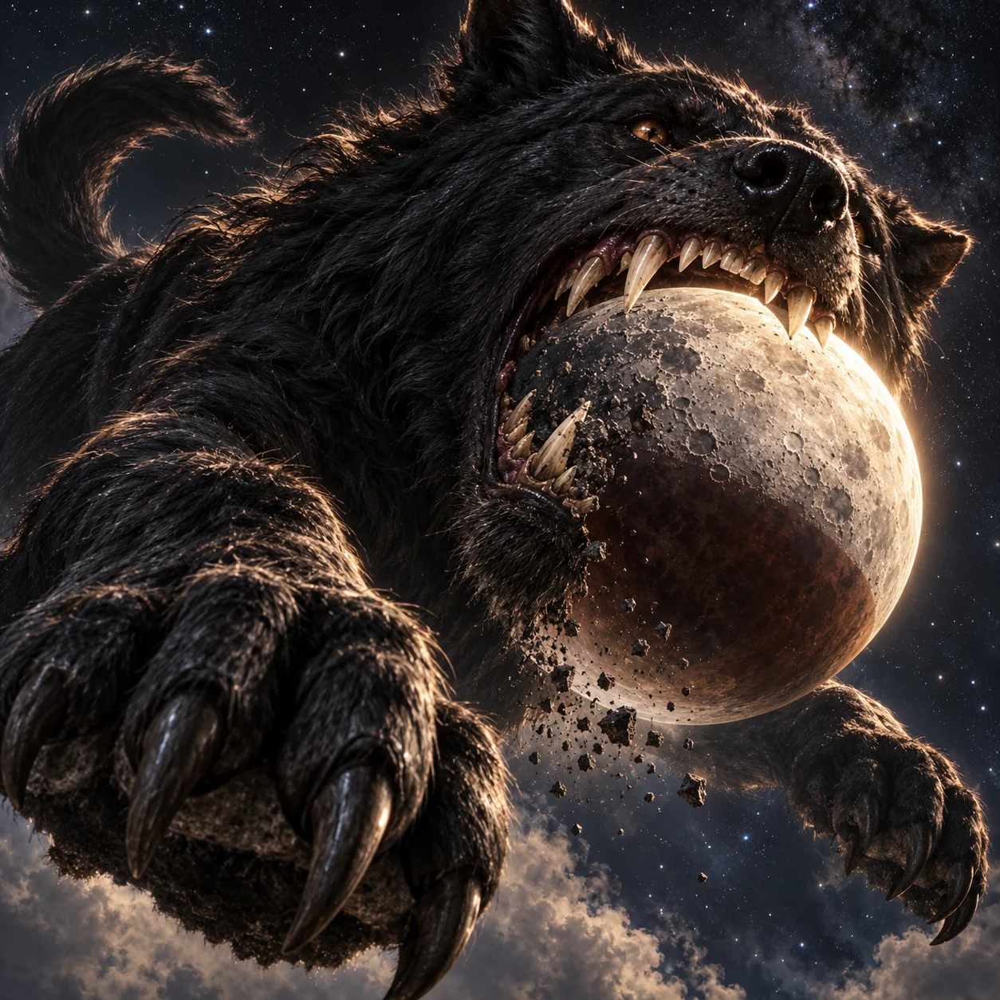
Tiangou varian anjing hitam membesar dan memakan Bulan, tidak dicampur meteor atau rubah putih.
Aura: Physically eat the Moon during an eclipse, a real cratered lunar sphere visibly entering the jaws; no fire, meteor trail, eye beams or glowing energy aura [tiangou-c02, tiangou-c04, tiangou-c10]
Audit ciri dan sumber
- [object Object]
- [object Object]
- [object Object]
Native+200 dilihat: anjing hitam satu kepala dua mata, kaki depan berforeshortening dan ekor tunggal, kaki belakang tertutup badan/clouds. Bulan cratered benar-benar di jaws, sebagian tergerus c02/c04/c10; skala membesar bersumber c10. Uji Sangar7/7.
Review sumberONE original square premium painterly cinematic Mythics illustration of Tiangou, the black heavenly dog growing enormous and consuming the Moon in the adverse eclipse legend.
ANATOMY: ONE BLACK DOG with one canine head, two eyes, exactly four natural legs and one tail, black coarse fur, huge canine jaws. No white fox head, no wings, no extra heads; ordinary dog anatomy at documented increasing cosmic size [tiangou-c01, tiangou-c04, tiangou-c10]
MOMENT: Surge toward the viewer through the night sky and clamp its jaws around the cratered Moon, teeth meeting the lunar edge as part of the moon disappears into its mouth.
POWER: Physically eat the Moon during an eclipse, a real cratered lunar sphere visibly entering the jaws; no fire, meteor trail, eye beams or glowing energy aura [tiangou-c02, tiangou-c04, tiangou-c10]
SCALE & CAMERA: extreme low angle; extreme low close angle below the black dog; immense jaws, forepaws and Moon dominate, cosmic size specifically from c10; subject fills the image, distinguishing anatomy readable at 200 pixels.
LIGHT & WEATHER: one dominant reflected light from the Moon caught in the jaws, silver-amber rim on black fur, deep walnut space shadows.
SURFACE: matted black fur, wet teeth, rough cracked lunar rock.
SETTING: The dark sky at the lunar eclipse, sparse natural stars and one cratered Moon [tiangou-c02, tiangou-c10, tiangou-c11]
MOOD: dangerous or awe-inspiring, imposing active presence, never cute, neutral, decorative or calm.
HARD CONSTRAINTS: one square image, native resolution at least 1024x1024; no text, glyphs, runes, inscriptions, symbols, lettering, logo, border, frame or watermark; all architecture and objects plain and uninscribed; no extra heads, limbs or fingers; no borrowed film, game, anime or comic design; no nudity or explicit gore; fully opaque clothing; no generic glowing aura, neon outline, energy ribbons or floating symbols.
Tianlong
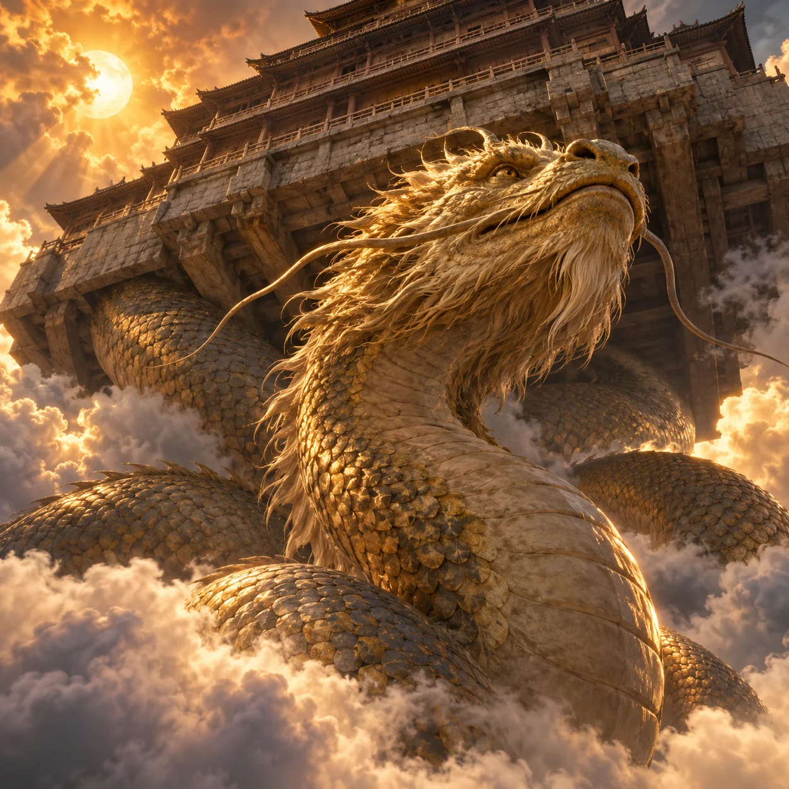
Tianlong varian nāga penjaga Mahayana yang menopang Heavenly Palace agar tidak jatuh.
Aura: The dragon carries and holds up the Heavenly Palace so it does not fall; the weight visibly rests against supporting coils and dense clouds stream around the lifted foundation. No unrelated storm control or energy beams [tianlong-c06, tianlong-c09]
Audit ciri dan sumber
- [object Object]
- [object Object]
- [object Object]
Native+200 dilihat: satu naga/naga-serpentine head dengan supporting coils menekan foundation istana; palace terbaca ditopang bukan dekorasi c06/c09. Tidak terlihat wings/limbs tambahan, tidak mencampur rainpower kelas lain. Low-angle sangat agung dalam exertion. Uji Sangar7/7.
Review sumberONE original square premium painterly cinematic Mythics illustration of Tianlong, the heavenly dragon or naga that guards and physically carries the Heavenly Palace so it does not fall in the Mahayana account.
ANATOMY: ONE living heavenly dragon/naga, one original serpentine dragon head, two eyes, one long coiled body, natural rough scales. Only the head, long neck and supporting body coils are visible; any limbs remain naturally occluded beneath the palace foundation and clouds. No visible wings, no added horn crown, no armor or modern dragon design [tianlong-c01, tianlong-c04, tianlong-c06, tianlong-c09]
MOMENT: Rise toward the viewer while bracing great living coils beneath the tilting Heavenly Palace foundation, lift its head in solemn protective authority and physically bear the building aloft.
POWER: The dragon carries and holds up the Heavenly Palace so it does not fall; the weight visibly rests against supporting coils and dense clouds stream around the lifted foundation. No unrelated storm control or energy beams [tianlong-c06, tianlong-c09]
SCALE & CAMERA: extreme low angle; extreme low angle looking beneath the palace foundation with the dragon face filling the foreground; body large enough to support the documented building, palace secondary; subject fills the image, distinguishing anatomy readable at 200 pixels.
LIGHT & WEATHER: one dominant amber moonbeam or dying-sun shaft, deep walnut shadows, high contrast rim light, physical dust or mist, no even daylight.
SURFACE: weathered earth-gold scales, natural stone foundation, rough plain wooden palace beams, dense cloud vapor.
SETTING: The Heavenly Palace aloft in heaven, a plain uninscribed stone-and-wood celestial palace supported by the dragon; no glyphs, symbols, statues or decorative lettering [tianlong-c06, tianlong-c09]
MOOD: respectful, awe-inspiring sacred guardian in active exertion, overwhelming protective grandeur, never evil or decorative.
HARD CONSTRAINTS: one square image, native resolution at least 1024x1024; no text, glyphs, runes, inscriptions, symbols, lettering, logo, border, frame or watermark; all architecture and objects plain and uninscribed; no extra heads, limbs or fingers; no borrowed film, game, anime or comic design; no nudity or explicit gore; fully opaque clothing; no generic glowing aura, neon outline, energy ribbons or floating symbols.
Tuchulcha
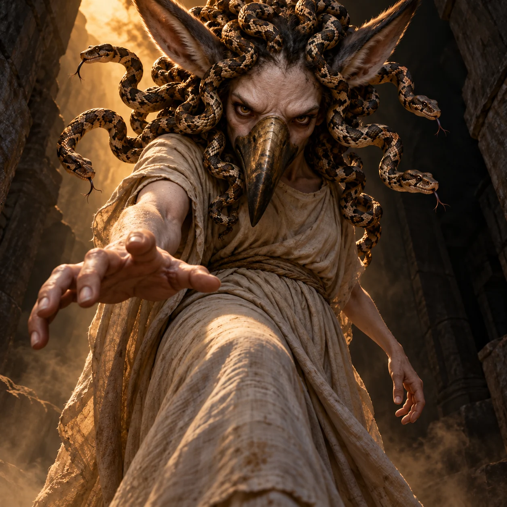
Tuchulcha berchiton buram dengan paruh besar, telinga runcing dan rambut ular, gender ambigu sesuai riset.
Aura: No documented magical effects; the writhing snake-hair and beaked animal anatomy supply physical menace and chthonic authority [tuchulcha-c01, tuchulcha-c08, tuchulcha-c10]
Audit ciri dan sumber
- [object Object]
- [object Object]
- [object Object]
Native+200 attempt02 dilihat: cakar tambahan dihapus, tangan natural lima jari; wajah/paruh burung besar/telinga runcing/snakehair diamond c01/c07/c08 tetap jelas. Chiton buram dan gender ambiguous c08/c09, melangkah dan mengulurkan tangan di Aita c02. Uji Sangar7/7.
Review sumberONE original square premium painterly cinematic Mythics illustration of Tuchulcha, the Etruscan chthonic daemon of Aita with pointed animal ears, a large bird beak and writhing snakes as hair.
ANATOMY: ONE sexually ambiguous humanoid daemon with one head, two eyes, a huge unmistakable large-bird BEAK in place of a human mouth, two long pointed donkey-or-wolf ears, writhing diamond-marked adder snakes as hair. Exactly two arms and two legs, pale pinkish skin, fully opaque simple unisex full-length chiton, no exposed chest and no emphasis on sexual anatomy. No wings, no extra humanoid heads [tuchulcha-c01, tuchulcha-c04, tuchulcha-c07, tuchulcha-c08, tuchulcha-c09]
MOMENT: Stride out of the underworld darkness toward the viewer, bend the great beaked face down and thrust one hand forward in stern psychopomp authority while the living snake-hair coils rear and writhe around its ears.
POWER: No documented magical effects; the writhing snake-hair and beaked animal anatomy supply physical menace and chthonic authority [tuchulcha-c01, tuchulcha-c08, tuchulcha-c10]
SCALE & CAMERA: extreme low angle; extremely low tight framing at normal humanoid proportions; face, beak, animal ears and writhing snake-hair all fully readable, no invented giant scale; subject fills the image, distinguishing anatomy readable at 200 pixels.
LIGHT & WEATHER: one dominant amber moonbeam or dying-sun shaft, deep walnut shadows, high contrast rim light, physical dust or mist, no even daylight.
SURFACE: matte pale skin, worn opaque linen chiton, horn-textured beak, coarse patterned adder scales.
SETTING: The shadowed underworld Aita, austere dark uninscribed stone passage with no tomb paintings or writing [tuchulcha-c02]
MOOD: dangerous or awe-inspiring, imposing active presence, never cute, neutral, decorative or calm.
HARD CONSTRAINTS: one square image, native resolution at least 1024x1024; no text, glyphs, runes, inscriptions, symbols, lettering, logo, border, frame or watermark; all architecture and objects plain and uninscribed; no extra heads, limbs or fingers; no borrowed film, game, anime or comic design; no nudity or explicit gore; fully opaque clothing; no generic glowing aura, neon outline, energy ribbons or floating symbols.
TARGETED EDIT of the supplied original image: change ONLY all fingernails on both hands. Remove the invented long black pointed claws, replace with short ordinary natural human fingernails, no sharp nail extensions or talons. Preserve exactly the beak, pointed ears, snake hair, face, simple fully opaque chiton, two hands with five fingers each, pose, lighting, dark plain background and square composition. No other changes. The source claims do not document clawed fingers.
Ubagabi
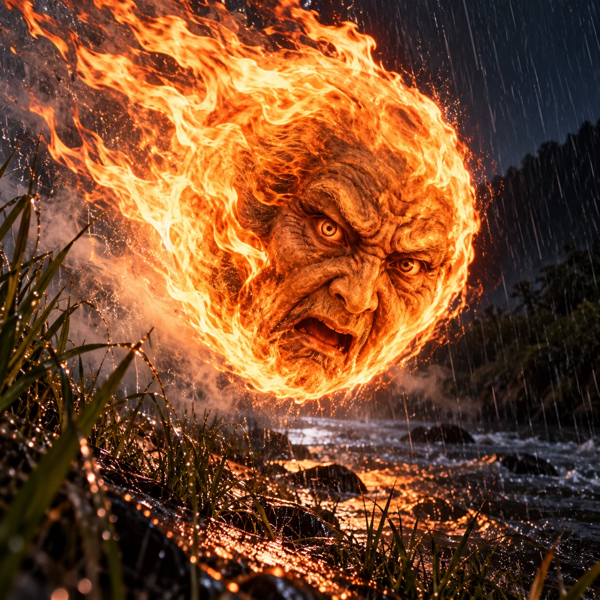
Ubagabi hi-no-tama satu kaki lebarnya dengan wajah perempuan tua di dalam nyala, terbang di riverbank hujan.
Aura: The documented fireball flies at great speed; real orange flame burns inside the sphere while rain physically steams and falls across the moving fire, no neon energy ribbons [ubagabi-c05, ubagabi-c08, ubagabi-c10]
Audit ciri dan sumber
- [object Object]
- [object Object]
- [object Object]
Native+200 dilihat: satu face tua di bola nyala nyata c08/c14, tanpa torso/tungkai; terbang mendekat di hujan riverbank c08/c10, real flames/sparks/rain fizik. Reed scale dan closeup menjaga bola sekitar1foot, tidak mengklaim giant head. Uji Sangar7/7.
Review sumberONE original square premium painterly cinematic Mythics illustration of Ubagabi, the rainy-night ghost fireball about one foot across with an old woman's face within its flames.
ANATOMY: ONE roughly ONE-FOOT-wide ball of real flame containing exactly one old woman's face, two eyes, weathered elderly features. No torso, no arms, no legs, no extra faces, no chicken mixed into this fireball variant [ubagabi-c02, ubagabi-c08, ubagabi-c14]
MOMENT: Rush through the rainy air almost into the viewer, twist its elderly face toward us with fierce accusatory intent as tangible flame tongues lash backward from the one-foot sphere.
POWER: The documented fireball flies at great speed; real orange flame burns inside the sphere while rain physically steams and falls across the moving fire, no neon energy ribbons [ubagabi-c05, ubagabi-c08, ubagabi-c10]
SCALE & CAMERA: extreme low angle; extreme close-up at riverbank height, one-foot fireball fills most of the image because it passes directly beside the lens; nearby reeds stay normal sized, no giant floating head; subject fills the image, distinguishing anatomy readable at 200 pixels.
LIGHT & WEATHER: the fireball itself is the single dominant warm orange flame light, wet black river and deep walnut shadows, falling rain and physically lit steam.
SURFACE: real flame tongues, elderly facial creases formed amid fire, raindrops and wet reeds.
SETTING: A dark riverbank on a rainy night in Kawachi/Tanba folklore, river water and wet reeds behind the hovering fireball [ubagabi-c01, ubagabi-c02, ubagabi-c07, ubagabi-c08]
MOOD: dangerous or awe-inspiring, imposing active presence, never cute, neutral, decorative or calm.
HARD CONSTRAINTS: one square image, native resolution at least 1024x1024; no text, glyphs, runes, inscriptions, symbols, lettering, logo, border, frame or watermark; all architecture and objects plain and uninscribed; no extra heads, limbs or fingers; no borrowed film, game, anime or comic design; no nudity or explicit gore; fully opaque clothing; no generic glowing aura, neon outline, energy ribbons or floating symbols.
Wani (dragon)
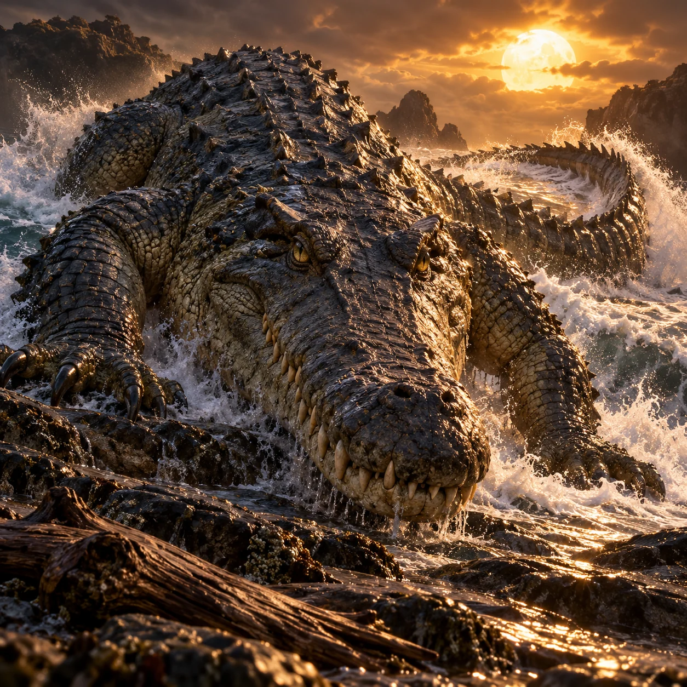
Wani bentuk buaya laut delapan fathom c06/c17, tidak mencampur interpretasi shark atau naga Tiongkok.
Aura: No undocumented magical powers; its huge eight-fathom body physically churns sea surf while crawling and writhing as described [wani-dragon-c06, wani-dragon-c17]
Audit ciri dan sumber
- [object Object]
- [object Object]
- [object Object]
Native+200 dilihat: buaya laut enorme satu kepala dua mata empat tungkai konsisten dengan rear limb sebagian tertutup surf, tail tunggal; merayap/writhe dan air bergolak c06/c17. Varian tidak dicampur fins/shark/horns. Uji Sangar7/7.
Review sumberONE original square premium painterly cinematic Mythics illustration of Wani (dragon), the sea monster in the documented eight-fathom crocodile-shaped manifestation, without mixing shark or Chinese-dragon interpretations.
ANATOMY: ONE enormous eight-fathom CROCODILE-like sea monster: one crocodilian head, two eyes, exactly four robust reptile legs, one long muscular tail, broad armor-covered body. No horns, wings, fins, fish tail, human torso or extra heads [wani-dragon-c01, wani-dragon-c02, wani-dragon-c06, wani-dragon-c11]
MOMENT: Crawl and writhe out of the sea toward the viewer, press its immense forefeet into coastal stone and lower the long crocodile jaws toward us while the powerful tail throws up surf.
POWER: No undocumented magical powers; its huge eight-fathom body physically churns sea surf while crawling and writhing as described [wani-dragon-c06, wani-dragon-c17]
SCALE & CAMERA: extreme low angle; extreme low angle from the surf directly before the head; documented eight-fathom body with nearby driftwood as small scale reference; subject fills the image, distinguishing anatomy readable at 200 pixels.
LIGHT & WEATHER: one dominant amber moonbeam or dying-sun shaft, deep walnut shadows, high contrast rim light, physical dust or mist, no even daylight.
SURFACE: massive rough wet crocodile armor, gritty belly scales, saltwater, dark barnacled stone.
SETTING: The sea meeting land in the Wani narrative; dark rocky coast and rolling surf, no river swamp or palace ornaments [wani-dragon-c05, wani-dragon-c12]
MOOD: awe-inspiring overwhelming sea-being in active emergence, dignified force of the ocean, not an ordinary zoo animal.
HARD CONSTRAINTS: one square image, native resolution at least 1024x1024; no text, glyphs, runes, inscriptions, symbols, lettering, logo, border, frame or watermark; all architecture and objects plain and uninscribed; no extra heads, limbs or fingers; no borrowed film, game, anime or comic design; no nudity or explicit gore; fully opaque clothing; no generic glowing aura, neon outline, energy ribbons or floating symbols.
飛頭蛮
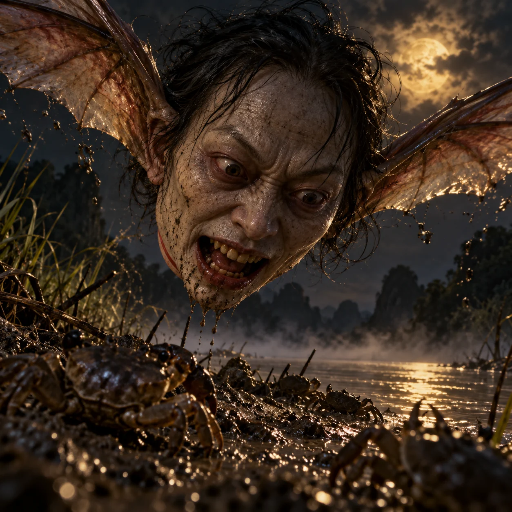
Feitouman varian Lingnan berkepala terbang dengan sayap dan cincin merah leher, bukan varian Java tanpa pupil.
Aura: Documented head detachment and night flight; physical head-wings beat and stir small mud droplets as it searches for crabs and worms, no generic aura [wd-q10566254-c01, wd-q10566254-c05, wd-q10566254-c06]
Audit ciri dan sumber
- [object Object]
- [object Object]
- [object Object]
Native+200 dilihat: satu kepala dewasa detached dengan pair head-wings, mata berpupil normal, redring pada neckbase tertutup tanpa gore; turun mencari crabs di mud c05/c06. Tidak mencampur pupil-less Jawa atau flyinghands. Uji Sangar7/7.
Review sumberONE original square premium painterly cinematic Mythics illustration of 飛頭蛮, Feitouman in the Lingnan night-flying-head account, whose head sprouts wings and searches riverbank mud for crabs and worms.
ANATOMY: ONE detached adult human head, two natural eyes with pupils, one mouth, winglike ears/head wings as one small symmetrical pair. A thin red ringlike mark circles the closed smooth neck base; no exposed wound, no blood, no organs, no torso or hands or extra head. Do not use the separate pupil-less Java variant [wd-q10566254-c01, wd-q10566254-c03, wd-q10566254-c05, wd-q10566254-c06]
MOMENT: Fly directly down toward the viewer and scan the muddy bank with ravenous intent, beat its two head-wings forward while turning the sickly face and mouth toward crabs in the immediate foreground.
POWER: Documented head detachment and night flight; physical head-wings beat and stir small mud droplets as it searches for crabs and worms, no generic aura [wd-q10566254-c01, wd-q10566254-c05, wd-q10566254-c06]
SCALE & CAMERA: extreme low angle; very low extreme close-up from river mud level; normal human-sized detached head fills the frame because it flies close, no invented giant head; subject fills the image, distinguishing anatomy readable at 200 pixels.
LIGHT & WEATHER: one dim amber moonbeam with wet dark mud reflections, deep walnut shadows, thin river mist.
SURFACE: weathered sickly human skin, smooth closed neck base, wet thin wing membranes, muddy bank.
SETTING: A dark muddy riverbank in the valleys of Lingnan at night, small crabs and wet reeds as close environmental detail [wd-q10566254-c05, wd-q10566254-c06]
MOOD: dangerous or awe-inspiring, imposing active presence, never cute, neutral, decorative or calm.
HARD CONSTRAINTS: one square image, native resolution at least 1024x1024; no text, glyphs, runes, inscriptions, symbols, lettering, logo, border, frame or watermark; all architecture and objects plain and uninscribed; no extra heads, limbs or fingers; no borrowed film, game, anime or comic design; no nudity or explicit gore; fully opaque clothing; no generic glowing aura, neon outline, energy ribbons or floating symbols.
人面魚
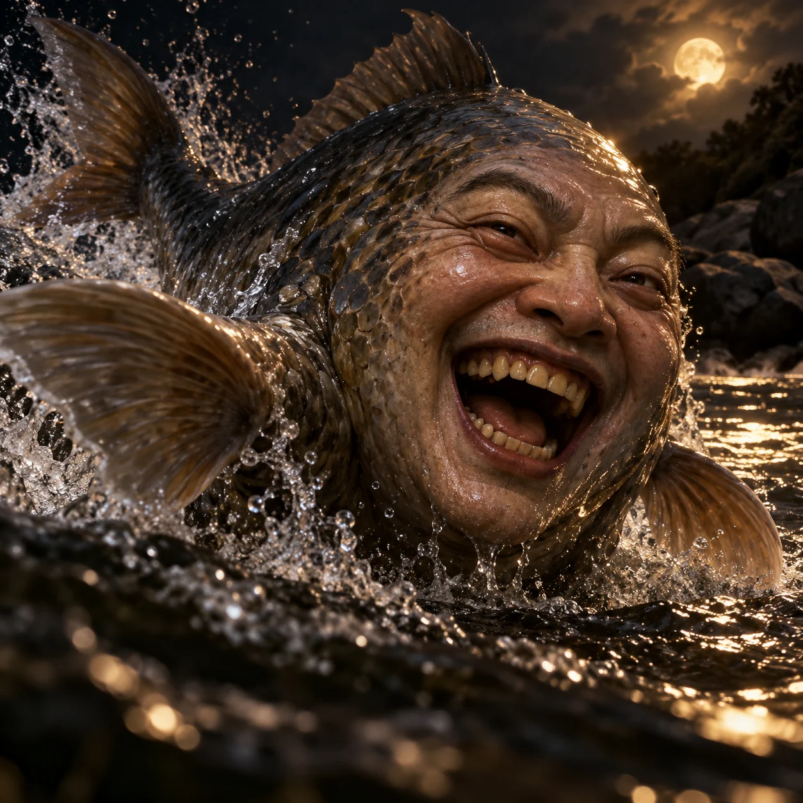
Renmianyu varian tradisional ikan besar berwajah manusia yang tertawa, bukan grilled tilapia urban1995.
Aura: No documented magical effects in the selected traditional human-face variant; its impossible human face visibly laughs c02, physical swimming throws water and bubbles [wd-q89656688-c02]
Audit ciri dan sumber
- [object Object]
- [object Object]
- [object Object]
Native+200 dilihat: satu fishbody besar dengan satu humanface seamless di depan, dua pectoralfins/dorsal/caudaltail; humanlaugh c02 terbaca sangat jelas saat surge air. Hybrid uncanny mendominasi, tidak grilledfish/urbanphoto. Uji Sangar7/7, tanpa aura/gore/glyph.
Review sumberONE original square premium painterly cinematic Mythics illustration of 人面魚, the traditional Taiwanese human-faced fish-being, with a large fish body that laughs when it sees people.
ANATOMY: ONE large living fish body with exactly ONE adult HUMAN FACE seamlessly forming the front of the fish head: two human eyes, one human nose and one laughing human mouth, scaled cheeks merging into the fish body. Two pectoral fins, one dorsal fin and one caudal tail, normal fish fins only; no human torso, hands, legs or extra faces [wd-q89656688-c01, wd-q89656688-c02]
MOMENT: Surge up toward the viewer from dark water and laugh with an unnervingly broad human expression, throw one pectoral fin and its scaled shoulder toward the lens while the tail thrusts water backward.
POWER: No documented magical effects in the selected traditional human-face variant; its impossible human face visibly laughs c02, physical swimming throws water and bubbles [wd-q89656688-c02]
SCALE & CAMERA: extreme low angle; extreme low split-level water close-up, human face and large fish shoulder fill the frame; no undocumented giant size; subject fills the image, distinguishing anatomy readable at 200 pixels.
LIGHT & WEATHER: one low amber moonbeam across wet scales and face, deep walnut water shadows, physical spray.
SURFACE: rough wet grey-brown fish scales, disturbingly natural adult skin merging into scaly face edges, gritty water.
SETTING: Dark freshwater in Taiwanese folklore, location intentionally unspecified, water surface and plain bank rocks behind; not grilled or served on a plate [wd-q89656688-c01, wd-q89656688-c02]
MOOD: dangerous or awe-inspiring, imposing active presence, never cute, neutral, decorative or calm.
HARD CONSTRAINTS: one square image, native resolution at least 1024x1024; no text, glyphs, runes, inscriptions, symbols, lettering, logo, border, frame or watermark; all architecture and objects plain and uninscribed; no extra heads, limbs or fingers; no borrowed film, game, anime or comic design; no nudity or explicit gore; fully opaque clothing; no generic glowing aura, neon outline, energy ribbons or floating symbols.
Wind Horse
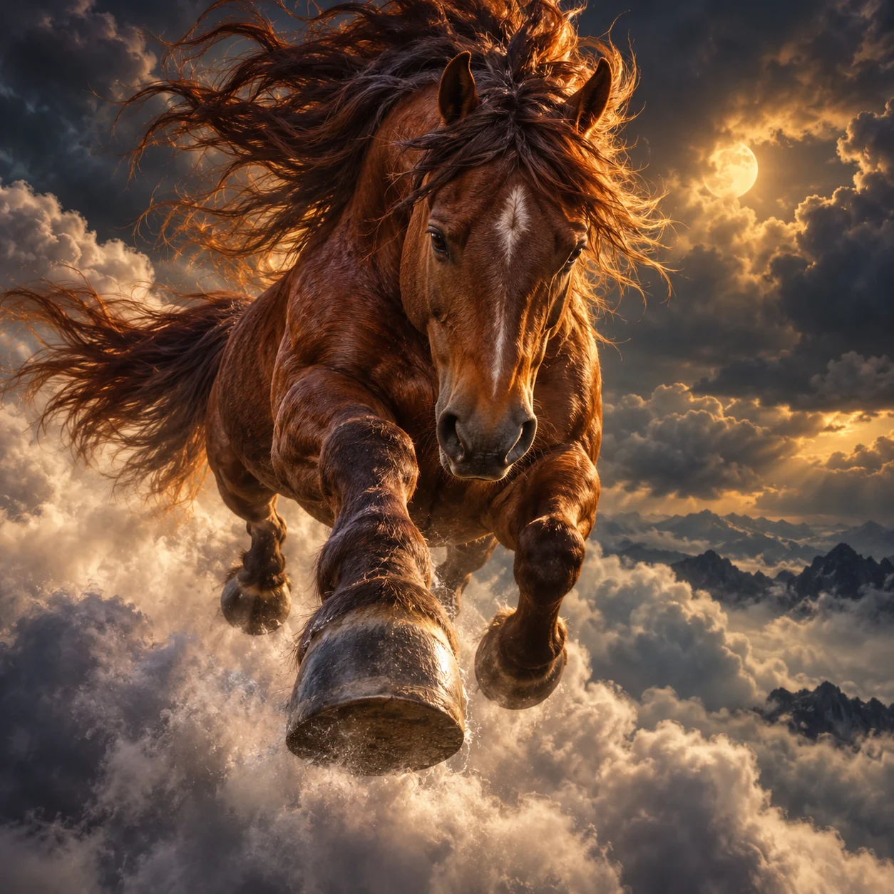
Wind Horse sebagai kuda hidup terbang lambang soul/well-being, tanpa banner, permata atau sayap yang tidak didokumentasikan.
Aura: The documented flying-horse form moves actively through the sky; real wind drives mane and tail and parts clouds, no generic divine glow, beams or ribbons [wind-horse-c01, wind-horse-c09]
Audit ciri dan sumber
- [object Object]
- [object Object]
- [object Object]
Native+200 dilihat: kuda hidup terbang wingless c01, satu kepala dua mata empat kaki dengan kaki belakang satu occluded, kuku kuda tunggal; gallop airborne ke viewer, mane/tail tersapu angin. Tidak ada banner/jewel/wings/aura. Sacred vitality c02/c09 lewat framing rendah. Uji Sangar7/7.
Review sumberONE original square premium painterly cinematic Mythics illustration of Wind Horse, the living flying-horse image symbolizing the soul and well-being in East and Central Asian and Tibetan traditions.
ANATOMY: ONE living natural horse, one equine head, two eyes, exactly four strong horse legs ending in ordinary single hooves, one flowing mane and one tail. A wingless horse flying through the air; no invented feather wings, jewel on back, saddle, rider, banner or flag, no extra legs [wind-horse-c01, wind-horse-c02]
MOMENT: Gallop airborne directly toward the viewer, drive its four hooves through a full galloping cycle and bow its powerful head down in overwhelming protective vitality, wind lashes mane and tail backward.
POWER: The documented flying-horse form moves actively through the sky; real wind drives mane and tail and parts clouds, no generic divine glow, beams or ribbons [wind-horse-c01, wind-horse-c09]
SCALE & CAMERA: extreme low angle; extreme low close tracking beneath the flying horse, forehooves strongly foreshortened, horse face and chest dominate; ordinary horse proportions, no invented cosmic giant scale; subject fills the image, distinguishing anatomy readable at 200 pixels.
LIGHT & WEATHER: one narrow amber moonbeam outlining warm dark chestnut fur, deep walnut cloud shadows, racing physical mist.
SURFACE: wind-rough chestnut coat, wet mane strands, worn natural hooves, dense cloud mist.
SETTING: High open air in East and Central Asian tradition, dark indistinct cloud masses and a far shadowed high horizon; no flags or written symbols [wind-horse-c01, wind-horse-c04]
MOOD: respectful sacred grandeur and protective vitality, powerful active flight, never demon horse or calm ordinary animal.
HARD CONSTRAINTS: one square image, native resolution at least 1024x1024; no text, glyphs, runes, inscriptions, symbols, lettering, logo, border, frame or watermark; all architecture and objects plain and uninscribed; no extra heads, limbs or fingers; no borrowed film, game, anime or comic design; no nudity or explicit gore; fully opaque clothing; no generic glowing aura, neon outline, energy ribbons or floating symbols.